2 MLM, 2-levels: Pupil Popularity
<<<<<<< HEAD
Download a new GitHub package
library(tidyverse)
library(haven) # read in SPSS dataset
library(furniture) # nice table1() descriptives
library(stargazer) # display nice tables: summary & regression
library(texreg) # Convert Regression Output to LaTeX or HTML Tables
library(RColorBrewer) # nice color palettes for plots
library(gridExtra) # place ggplots together as one plot
library(psych) # contains some useful functions, like headTail
library(car) # Companion to Applied Regression
library(nlme) # non-linear mixed-effects models
library(lme4) # Linear, generalized linear, & nonlinear mixed models
library(lmerTest) # Tests on lmer objects
library(performance) # icc and r-squared functions **NEWER**
library(interactions) # interaction plots **NEWER**
library(glmmTMB)
library(HLMdiag) # Diagnostic Tools for for nlme & lmer4
library(redres) # Diagnosing MLM models
library(sjstats) # ICC calculations
library(optimx) # Different optimizers to solve mlm'slibrary(tidyverse)
library(haven) # read in SPSS dataset
library(furniture) # nice table1() descriptives
library(stargazer) # display nice tables: summary & regression
library(texreg) # Convert Regression Output to LaTeX or HTML Tables
library(RColorBrewer) # nice color palettes for plots
library(gridExtra) # place ggplots together as one plot
library(psych) # contains some useful functions, like headTail
library(car) # Companion to Applied Regression
library(nlme) # non-linear mixed-effects models
library(lme4) # Linear, generalized linear, & nonlinear mixed models
library(lmerTest) # Tests on lmer objects
library(HLMdiag) # Diagnostic Tools for for nlme & lmer4
library(sjstats) # ICC calculations
library(optimx) # Different optimizers to solve mlm's2.1 Background
The text “Multilevel Analysis: Techniques and Applications, Third Edition” (Hox, Moerbeek, and Van de Schoot 2017) has a companion website which includes links to all the data files used throughout the book (housed on the book’s GitHub repository).
The following example is used through out Hox, Moerbeek, and Van de Schoot (2017)’s chapater 2.
<<<<<<< HEADFrom Appendix E:
The popularity data in popular2.sav are simulated data for 2000 pupils in 100 schools. The purpose is to offer a very simple example for multilevel regression analysis. The main outcome variable is the pupil popularity, a popularity rating on a scale of 1-10 derived by a sociometric procedure. Typically, a sociometric procedure asks all pupils in a class to rate all the other pupils, and then assigns the average received popularity rating to each pupil. Because of the sociometric procedure, group effects as apparent from higher level variance components are rather strong. There is a second outcome variable: pupil popularity as rated by their teacher, on a scale from 1-10. The explanatory variables are pupil gender (boy=0, girl=1), pupil extroversion (10-point scale) and teacher experience in years. The popularity data have been generated to be a ‘nice’ well-behaved data set: the sample sizes at both levels are sufficient, the residuals have a normal distribution, and the multilevel effects are strong.

data_raw <- haven::read_sav("https://github.com/MultiLevelAnalysis/Datasets-third-edition-Multilevel-book/raw/master/chapter%202/popularity/SPSS/popular2.sav") %>%
haven::as_factor() # retain the labels from SPSS --> factor
tibble::glimpse(data_raw) Rows: 2,000
Columns: 15
=======
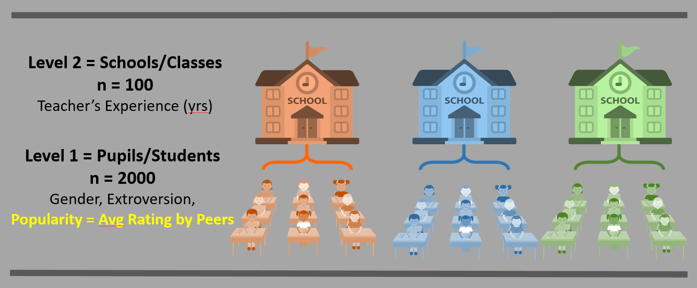
data_raw <- haven::read_sav("https://github.com/MultiLevelAnalysis/Datasets-third-edition-Multilevel-book/raw/master/chapter%202/popularity/SPSS/popular2.sav") %>%
haven::as_factor() # retain the labels from SPSS --> factor
tibble::glimpse(data_raw)
Observations: 2,000
Variables: 15
>>>>>>> master
$ pupil <dbl> 1, 2, 3, 4, 5, 6, 7, 8, 9, 10, 11, 12, 13, 14, 15, 16, 17...
$ class <dbl> 1, 1, 1, 1, 1, 1, 1, 1, 1, 1, 1, 1, 1, 1, 1, 1, 1, 1, 1, ...
$ extrav <dbl> 5, 7, 4, 3, 5, 4, 5, 4, 5, 5, 5, 5, 5, 5, 5, 6, 4, 4, 7, ...
$ sex <fct> girl, boy, girl, girl, girl, boy, boy, boy, boy, boy, gir...
$ texp <dbl> 24, 24, 24, 24, 24, 24, 24, 24, 24, 24, 24, 24, 24, 24, 2...
$ popular <dbl> 6.3, 4.9, 5.3, 4.7, 6.0, 4.7, 5.9, 4.2, 5.2, 3.9, 5.7, 4....
$ popteach <dbl> 6, 5, 6, 5, 6, 5, 5, 5, 5, 3, 5, 5, 5, 6, 5, 5, 2, 3, 7, ...
$ Zextrav <dbl> -0.1703149, 1.4140098, -0.9624772, -1.7546396, -0.1703149...
$ Zsex <dbl> 0.9888125, -1.0108084, 0.9888125, 0.9888125, 0.9888125, -...
$ Ztexp <dbl> 1.48615283, 1.48615283, 1.48615283, 1.48615283, 1.4861528...
$ Zpopular <dbl> 0.88501327, -0.12762911, 0.16169729, -0.27229230, 0.66801...
$ Zpopteach <dbl> 0.66905609, -0.04308451, 0.66905609, -0.04308451, 0.66905...
$ Cextrav <dbl> -0.215, 1.785, -1.215, -2.215, -0.215, -1.215, -0.215, -1...
$ Ctexp <dbl> 9.737, 9.737, 9.737, 9.737, 9.737, 9.737, 9.737, 9.737, 9...
$ Csex <dbl> 0.5, -0.5, 0.5, 0.5, 0.5, -0.5, -0.5, -0.5, -0.5, -0.5, 0...
2.1.1 Unique Identifiers
We will restrict ourselves to a few of the variables and create a distinct identifier variable for each student.
<<<<<<< HEAD
data_pop <- data_raw %>%
dplyr::mutate(id = paste(class, pupil,
sep = "_") %>% # create a unique id for each student (char)
factor()) %>% # declare id is a factor
dplyr::select(id, pupil:popteach) # reduce the variables included
tibble::glimpse(data_pop)
Rows: 2,000
Columns: 8
=======
data_pop <- data_raw %>%
dplyr::mutate(id = paste(class, pupil,
sep = "_") %>% # create a unique id for each student (char)
factor()) %>% # declare id is a factor
dplyr::select(id, pupil:popteach) # reduce the variables included
tibble::glimpse(data_pop)
Observations: 2,000
Variables: 8
>>>>>>> master
$ id <fct> 1_1, 1_2, 1_3, 1_4, 1_5, 1_6, 1_7, 1_8, 1_9, 1_10, 1_11, 1...
$ pupil <dbl> 1, 2, 3, 4, 5, 6, 7, 8, 9, 10, 11, 12, 13, 14, 15, 16, 17,...
$ class <dbl> 1, 1, 1, 1, 1, 1, 1, 1, 1, 1, 1, 1, 1, 1, 1, 1, 1, 1, 1, 1...
$ extrav <dbl> 5, 7, 4, 3, 5, 4, 5, 4, 5, 5, 5, 5, 5, 5, 5, 6, 4, 4, 7, 4...
$ sex <fct> girl, boy, girl, girl, girl, boy, boy, boy, boy, boy, girl...
$ texp <dbl> 24, 24, 24, 24, 24, 24, 24, 24, 24, 24, 24, 24, 24, 24, 24...
$ popular <dbl> 6.3, 4.9, 5.3, 4.7, 6.0, 4.7, 5.9, 4.2, 5.2, 3.9, 5.7, 4.8...
$ popteach <dbl> 6, 5, 6, 5, 6, 5, 5, 5, 5, 3, 5, 5, 5, 6, 5, 5, 2, 3, 7, 4...
2.1.2 Structure and variables
Its a good idea to visually inspect the first few lines in the datast to get a sense of how it is organized.
<<<<<<< HEAD
=======
>>>>>>> master
id
pupil
class
extrav
sex
texp
popular
popteach
1_1
1
1
5
girl
24
6.3
6
1_2
2
1
7
boy
24
4.9
5
1_3
3
1
4
girl
24
5.3
6
1_4
4
1
3
girl
24
4.7
5
1_5
5
1
5
girl
24
6
6
1_6
6
1
4
boy
24
4.7
5
1_7
7
1
5
boy
24
5.9
5
1_8
8
1
4
boy
24
4.2
5
1_9
9
1
5
boy
24
5.2
5
1_10
10
1
5
boy
24
3.9
3
1_11
11
1
5
girl
24
5.7
5
1_12
12
1
5
girl
24
4.8
5
1_13
13
1
5
boy
24
5
5
1_14
14
1
5
girl
24
5.5
6
1_15
15
1
5
girl
24
6
5
1_16
16
1
6
girl
24
5.7
5
1_17
17
1
4
boy
24
3.2
2
1_18
18
1
4
boy
24
3.1
3
1_19
19
1
7
girl
24
6.6
7
1_20
20
1
4
boy
24
4.8
4
2_1
1
2
8
girl
14
6.4
6
2_2
2
2
4
boy
14
2.4
3
2_3
3
2
6
boy
14
3.7
4
2_4
4
2
5
girl
14
4.4
4
2_5
5
2
5
girl
14
4.3
4
NA
…
…
…
NA
…
…
…
100_16
16
100
4
girl
7
4.3
5
100_17
17
100
4
boy
7
2.6
2
100_18
18
100
8
girl
7
6.7
7
100_19
19
100
5
boy
7
2.9
3
100_20
20
100
9
boy
7
5.3
5
Visual inspection reveals that most of the variables are measurements at level 1 and apply to specific pupils (extrav, sex, popular, and popteach), while the teacher’s years of experiene is a level 2 variable since it applies to the entire class. Notice how the texp variable is identical for all pupils in the same class. This is call Disaggregated data.
2.2 Exploratory Data Analysis
2.2.1 Summarize Descriptive Statistics
2.2.1.1 The stargazer package
<<<<<<< HEAD
Most posters, journal articles, and reports start with a table of descriptive statistics. Since it tends to come first, this type of table is often refered to as Table 1. The stargazer() function can be used to create such a table, but only for the entire dataset (Hlavac 2018). I haven’t been able to find a way to get it to summarize subsamples and compare them in the standard format.
# Knit to Website: type = "html"
# Knit to PDF: type = "latex"
# View on Screen: type = "text"
data_pop %>%
dplyr::select(extrav, texp, popular) %>%
data.frame() %>%
stargazer::stargazer(title = "Descriptive statistics, aggregate over entire sample",
header = FALSE,
type = "html")Most posters, journal articles, and reports start with a table of descriptive statistics. Since it tends to come first, this type of table is often refered to as Table 1. The stargazer() function can be used to create such a table, but only for the entire dataset (Hlavac 2018). I haven’t been able to find a way to get it to summarize subsamples and compare them in the standard format.
# Knit to Website: type = "html"
# Knit to PDF: type = "latex"
# View on Screen: type = "text"
data_pop %>%
dplyr::select(extrav, texp, popular) %>%
data.frame() %>%
stargazer::stargazer(title = "Descriptive statistics, aggregate over entire sample",
header = FALSE,
type = "html")| Statistic | N | Mean | St. Dev. | Min | Pctl(25) | Pctl(75) | Max |
| extrav | 2,000 | 5.215 | 1.262 | 1 | 4 | 6 | 10 |
| texp | 2,000 | 14.263 | 6.552 | 2 | 8 | 20 | 25 |
| popular | 2,000 | 5.076 | 1.383 | 0.000 | 4.100 | 6.000 | 9.500 |
2.2.1.2 The furniture package
Tyson Barrett’s furniture package includes the extremely useful function table1() which simplifies the common task of creating a stratified, comparative table of descriptive statistics. Full documentation can be accessed by executing ?furniture::table1.
# Knit to Website: output = "html"
# Knit to PDF: output = "latex2"
# View on Screen: output = ""text", or "markdown", "html"
data_pop %>%
furniture::table1("Pupil's extroversion (10 pt)" = extrav,
"Teacher's Experience (years)" = texp,
"Popularity, Sociometric Score" = popular,
"Popularity, Teacher Evaluated" = popteach,
splitby = ~ sex, # divide sample into columns by...
test = TRUE, # test groups different?
output = "html", # output for latex
caption = "Compare genders on four main variables") # title# Knit to Website: output = "html"
# Knit to PDF: output = "latex2"
# View on Screen: output = ""text", or "markdown", "html"
data_pop %>%
furniture::table1("Pupil's Extraversion (10 pt)" = extrav,
"Teacher's Experience (years)" = texp,
"Popularity, Sociometric Score" = popular,
"Popularity, Teacher Evaluated" = popteach,
splitby = ~ sex, # divide sample into columns by...
test = TRUE, # test groups different?
output = "html", # output for latex
caption = "Compare genders on four main variables") # title| boy | girl | P-Value | |
|---|---|---|---|
| n = 989 | n = 1011 | ||
| Pupil’s extroversion (10 pt) | <.001 | ||
| 5.1 (1.2) | 5.3 (1.3) | ||
| Teacher’s Experience (years) | 0.001 | ||
| 13.8 (6.3) | 14.7 (6.8) | ||
| Popularity, Sociometric Score | <.001 | ||
| 4.3 (1.1) | 5.9 (1.1) | ||
| Popularity, Teacher Evaluated | <.001 | ||
| 4.3 (1.2) | 5.8 (1.2) |
2.2.2 Visualizations of Raw Data
2.2.2.1 Ignore Clustering
2.2.2.1.1 Scatterplots
<<<<<<< HEADFor a first look, its useful to plot all the data points on a single scatterplot as displayed in Figure 2.1. Due to ganularity in the rating scale, many points end up being plotted on top of each other (overplotted), so its a good idea to use geom_count() rather than geom_point() so the size of the dot can convey the number of points at that location (Wickham et al. 2020).
# Disaggregate: pupil (level 1) only, ignore level 2's existance
# extroversion treated: continuous measure
data_pop %>%
ggplot() +
aes(x = extrav, # x-axis variable
y = popular) + # y-axis variable
geom_count() + # POINTS w/ SIZE = COUNT
geom_smooth(method = "lm") + # linear regression line
theme_bw() + # white background
labs(x = "extroversion (10 pt scale)", # x-axis label
y = "Popularity, Sociometric Score", # y-axis label
size = "Count") + # legend key's title
theme(legend.position = c(0.9, 0.2), # key at
legend.background = element_rect(color = "black")) + # key box
scale_x_continuous(breaks = seq(from = 0, to = 10, by = 1)) + # x-ticks
scale_y_continuous(breaks = seq(from = 0, to = 10, by = 2)) # y-ticksFor a first look, its useful to plot all the data points on a single scatterplot as displayed in Figure 2.1. Due to ganularity in the rating scale, many points end up being plotted on top of each other (overplotted), so its a good idea to use geom_count() rather than geom_point() so the size of the dot can convey the number of points at that location (Wickham et al. 2019).
# Disaggregate: pupil (level 1) only, ignore level 2's existance
# Extraversion treated: continuous measure
data_pop %>%
ggplot() +
aes(x = extrav, # x-axis variable
y = popular) + # y-axis variable
geom_count() + # POINTS w/ SIZE = COUNT
geom_smooth(method = "lm") + # linear regression line
theme_bw() + # white background
labs(x = "Extraversion (10 pt scale)", # x-axis label
y = "Popularity, Sociometric Score", # y-axis label
size = "Count") + # legend key's title
theme(legend.position = c(0.9, 0.2), # key at
legend.background = element_rect(color = "black")) + # key box
scale_x_continuous(breaks = seq(from = 0, to = 10, by = 1)) + # x-ticks
scale_y_continuous(breaks = seq(from = 0, to = 10, by = 2)) # y-ticksFigure 2.1: Disaggregate: pupil level only with extroversion treated as an continuous measure.
2.2.2.1.2 Density Plots
When the degree of overplotting as high as it is in Figure 2.1, it can be useful to represent the data with density contours as seen in Figure 2.2. I’ve chosen to leave the points displayed in this redition, but color them much lighter so that they are present, but do not detract from the pattern of association.
<<<<<<< HEAD# visualize all the data - another way
data_pop %>%
ggplot() +
aes(x = extrav, # x-axis variable
y = popular) + # y-axis variable
geom_count(color = "gray") + # POINTS w/ SIZE = COUNT
geom_density2d() + # DENSITY CURVES
geom_smooth(method = "lm", color = "red") + # linear regression line
theme_bw() + # white background
labs(x = "Extroversion (10 pt scale)", # x-axis label
y = "Popularity, Sociometric Score") + # y-axis label
guides(size = FALSE) + # don't include a legend
scale_x_continuous(breaks = seq(from = 0, to = 10, by = 1)) + # x-ticks
scale_y_continuous(breaks = seq(from = 0, to = 10, by = 2)) # y-ticks# visualize all the data - another way
data_pop %>%
ggplot() +
aes(x = extrav, # x-axis variable
y = popular) + # y-axis variable
geom_count(color = "gray") + # POINTS w/ SIZE = COUNT
geom_density2d() + # DENSITY CURVES
geom_smooth(method = "lm", color = "red") + # linear regression line
theme_bw() + # white background
labs(x = "Extraversion (10 pt scale)", # x-axis label
y = "Popularity, Sociometric Score") + # y-axis label
guides(size = FALSE) + # don't include a legend
scale_x_continuous(breaks = seq(from = 0, to = 10, by = 1)) + # x-ticks
scale_y_continuous(breaks = seq(from = 0, to = 10, by = 2)) # y-ticksFigure 2.2: Disaggregate: pupil level only with extroversion treated as an continuous measure.
The argument could be made that the extroversion score should be treated as an ordinal factor instead of as a truly continuous scale since the only valid values are the whole number 1 through 10 and there is no assurance that these category assignments represent a true ratio measurement scale. However, we must keep in mind that this was an observational study, ans as such, the number of pupils assignment each level of extroversion is not equal.
# count the number of pupils in assigned each extroversion value, 1:10
table <- data_pop %>%
group_by(extrav) %>%
summarise(count = n_distinct(id),
percent = 100 * count / 2000)
# Knit to Website: type = "html"
# Knit to PDF: type = "latex"
# View on Screen: type = "text"
table %>%
stargazer(summary = FALSE,
rownames = FALSE,
header = FALSE,
type = "html",
title = "Distribution of extroversion in pupils")2.2.2.1.3 Hexagonal Heatmap Plots
Divides the x-y plane into regular hexagons, counts the number of cases in each hexagon, and then (by default) maps the number of cases to the hexagon fill.
This is a nice option when BOTH the x and y axis variables are continuous. Since your x-axis variable (extrav) is more discrete in nature (whole number values only), this type of plot isn’t really the best.
data_pop %>%
ggplot() +
aes(x = extrav, # x-axis variable
y = popular) + # y-axis variable
stat_binhex(colour = "grey85",
na.rm = TRUE,
binwidth = .5) +
scale_fill_gradientn(colors = c("grey80","navyblue"),
name = "Frequency",
na.value = NA) +
geom_smooth(method = "lm", color = "red") + # linear regression line
theme_bw() + # white background
labs(x = "Extraversion (10 pt scale)", # x-axis label
y = "Popularity, Sociometric Score") + # y-axis label
guides(size = FALSE) + # don't include a legend
scale_x_continuous(breaks = seq(from = 0, to = 10, by = 1)) + # x-ticks
scale_y_continuous(breaks = seq(from = 0, to = 10, by = 2)) # y-ticks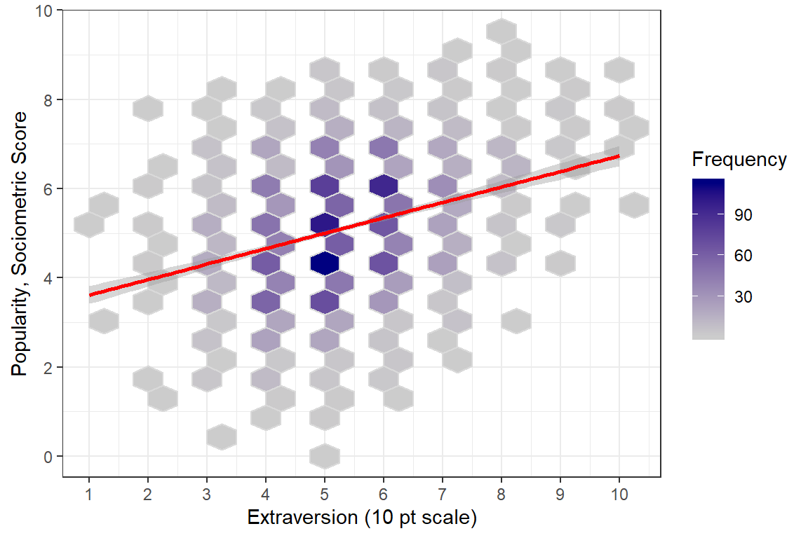
The argument could be made that the extraversion score should be treated as an ordinal factor instead of as a truely continuous scale since the only valid values are the whole number 1 through 10 and there is no assurance that these category assignments represent a true ratio measurement scale. However, we must keep in mind that this was an observational study, ans as such, the number of pupils assignment each level of extraversion is not equal.
# count the number of pupils in assigned each Extraversion value, 1:10
table <- data_pop %>%
group_by(extrav) %>%
summarise(count = n_distinct(id),
percent = 100 * count / 2000)
# Knit to Website: type = "html"
# Knit to PDF: type = "latex"
# View on Screen: type = "text"
table %>%
stargazer(summary = FALSE,
rownames = FALSE,
header = FALSE,
type = "html",
title = "Distribution of extraversion in pupils")| extrav | count | percent |
| 1 | 3 | 0.15 |
| 2 | 13 | 0.65 |
| 3 | 119 | 5.95 |
| 4 | 423 | 21.15 |
| 5 | 688 | 34.4 |
| 6 | 478 | 23.9 |
| 7 | 194 | 9.7 |
| 8 | 58 | 2.9 |
| 9 | 18 | 0.9 |
| 10 | 6 | 0.3 |
2.2.2.1.3 Boxplots
Figure 2.3 displays the same data as Figure 2.1, but uses boxplots for the distribution of scores at each level of extroversion. On one extreme, the lowest extroversion score possible was a value of “one”, but only 3 pupils or 0.15% of the 2000 pupils recieved this value. On the other extreme, the middle value of “five” was applied to 688 pupils or a wopping 34.4%. The option varwidth=TRUE in the geom_boxplot() function helps reflect such unbalanced sample sizes by allowing the width of the boxes to be proportional to the square-roots of the number of observations each box represents.
# Disaggregate: pupil (level 1) only, ignore level 2's existance
# extroversion treated: ordinal factor
ggplot(data_pop, # dataset's name
aes(x = factor(extrav), # x-axis values - make factor!
y = popular, # y-axis values
fill = factor(extrav))) + # makes seperate boxes
geom_boxplot(varwidth = TRUE) + # draw boxplots instead of points
theme_bw() + # white background
guides(fill = FALSE) + # don't include a legend
scale_y_continuous(breaks = seq(from = 0, to = 10, by = 2)) + # y-ticks
labs(x = "extroversion (10 pt scale)", # x-axis label
y = "Popularity, Sociometric Score") + # y-axis label
scale_fill_brewer(palette = "Spectral", direction = 1) # select color2.2.2.1.4 Boxplots
Figure 2.3 displays the same data as Figure 2.1, but uses boxplots for the distribution of scores at each level of extraversion. On one extreme, the lowest extraversion score possible was a value of “one”, but only 3 pupils or 0.15% of the 2000 pupils recieved this value. On the other extreme, the middle value of “five” was applied to 688 pupils or a wopping 34.4%. The option varwidth=TRUE in the geom_boxplot() function helps reflect such unbalanced sample sizes by allowing the width of the boxes to be proportional to the square-roots of the number of observations each box represents.
# Disaggregate: pupil (level 1) only, ignore level 2's existance
# Extraversion treated: ordinal factor
ggplot(data_pop, # dataset's name
aes(x = factor(extrav), # x-axis values - make factor!
y = popular, # y-axis values
fill = factor(extrav))) + # makes seperate boxes
geom_boxplot(varwidth = TRUE) + # draw boxplots instead of points
theme_bw() + # white background
guides(fill = FALSE) + # don't include a legend
scale_y_continuous(breaks = seq(from = 0, to = 10, by = 2)) + # y-ticks
labs(x = "Extraversion (10 pt scale)", # x-axis label
y = "Popularity, Sociometric Score") + # y-axis label
scale_fill_brewer(palette = "Spectral", direction = 1) # select colorFigure 2.3: Disaggregate: pupil level only with extroversion treated as an ordinal factor. The width of the boxes are proportional to the square-roots of the number of observations each box represents.
2.2.3 Consider Clustering
2.2.3.1 Scatterplots
Up to this point, all investigation of this dataset has been only at the pupil level and any nesting or clustering within classes has been ignored. Plotting is a good was to start to get an idea of the class-to-class variability.
<<<<<<< HEAD# compare the first 9 classrooms becuase all of there are too many at once
data_pop %>%
dplyr::filter(class <= 9) %>% # select ONLY NINE classes
ggplot(aes(x = extrav, # x-axis values
y = popular)) + # y-axis values
geom_count() + # POINTS w/ SIZE = COUNT
geom_smooth(method = "lm", color = "red") + # linear regression line
theme_bw() + # white background
labs(x = "extroversion (10 pt scale)", # x-axis label
y = "Popularity, Sociometric Score", # y-axis label
size = "Count") + # legend key's title
guides(size = FALSE) + # don't include a legend
scale_x_continuous(breaks = seq(from = 0, to = 10, by = 3)) + # x-ticks
scale_y_continuous(breaks = seq(from = 0, to = 10, by = 3)) + # y-ticks
facet_wrap(~ class,
labeller = label_both) +
theme(strip.background = element_rect(colour = NA,
fill = NA))# compare the first 9 classrooms becuase all of there are too many at once
data_pop %>%
dplyr::filter(class <= 9) %>% # select ONLY NINE classes
ggplot(aes(x = extrav, # x-axis values
y = popular)) + # y-axis values
geom_count() + # POINTS w/ SIZE = COUNT
geom_smooth(method = "lm", color = "red") + # linear regression line
theme_bw() + # white background
labs(x = "Extraversion (10 pt scale)", # x-axis label
y = "Popularity, Sociometric Score", # y-axis label
size = "Count") + # legend key's title
guides(size = FALSE) + # don't include a legend
scale_x_continuous(breaks = seq(from = 0, to = 10, by = 3)) + # x-ticks
scale_y_continuous(breaks = seq(from = 0, to = 10, by = 3)) + # y-ticks
facet_wrap(~ class,
labeller = label_both) +
theme(strip.background = element_rect(colour = NA,
fill = NA))Figure 2.4: Illustration of the degree of class level variability in the association between extroversion and popularity. Each panel represents a class and each point a pupil in that class. First nice classes shown.
# select specific classes by number for illustration purposes
data_pop %>%
dplyr::filter(class %in% c(15, 25, 33,
35, 51, 64,
76, 94, 100)) %>%
ggplot(aes(x = extrav, # x-axis values
y = popular)) + # y-axis values
geom_count() + # POINTS w/ SIZE = COUNT
geom_smooth(method = "lm", color = "red") + # linear regression line
theme_bw() + # white background
labs(x = "extroversion (10 pt scale)", # x-axis label
y = "Popularity, Sociometric Score", # y-axis label
size = "Count") + # legend key's title
guides(size = FALSE) + # don't include a legend
scale_x_continuous(breaks = seq(from = 0, to = 10, by = 3)) + # x-ticks
scale_y_continuous(breaks = seq(from = 0, to = 10, by = 3)) + # y-ticks
facet_wrap(~ class) +
theme(strip.background = element_blank(),
strip.text = element_blank())# select specific classes by number for illustration purposes
data_pop %>%
dplyr::filter(class %in% c(15, 25, 33,
35, 51, 64,
76, 94, 100)) %>%
ggplot(aes(x = extrav, # x-axis values
y = popular)) + # y-axis values
geom_count() + # POINTS w/ SIZE = COUNT
geom_smooth(method = "lm", color = "red") + # linear regression line
theme_bw() + # white background
labs(x = "Extraversion (10 pt scale)", # x-axis label
y = "Popularity, Sociometric Score", # y-axis label
size = "Count") + # legend key's title
guides(size = FALSE) + # don't include a legend
scale_x_continuous(breaks = seq(from = 0, to = 10, by = 3)) + # x-ticks
scale_y_continuous(breaks = seq(from = 0, to = 10, by = 3)) + # y-ticks
facet_wrap(~ class) +
theme(strip.background = element_blank(),
strip.text = element_blank())Figure 2.5: Illustration of the degree of class level variability in the association between extroversion and popularity. Each panel represents a class and each point a pupil in that class. A set of nine classes was chosen to show a sampling of variability. The facet labels are not shown as the identification number probably would not be advisable for a general publication.
2.2.3.2 Cluster-wise Regression
<<<<<<< HEAD# compare all 100 classrooms via linear model for each
ggplot(data_pop,
aes(x = extrav, # x-axis values
y = popular, # y-axis values
group = class)) + # GROUPs for LINES
geom_smooth(method = "lm", # linear regression line
color = "gray40",
size = 0.4,
se = FALSE) +
theme_bw() + # white background
labs(x = "extroversion (10 pt scale)", # x-axis label
y = "Popularity, Sociometric Score") + # y-axis label
scale_x_continuous(breaks = seq(from = 0, to = 10, by = 2)) + # x-ticks
scale_y_continuous(breaks = seq(from = 0, to = 10, by = 2)) # y-ticks# compare all 100 classrooms via linear model for each
ggplot(data_pop,
aes(x = extrav, # x-axis values
y = popular, # y-axis values
group = class)) + # GROUPs for LINES
geom_smooth(method = "lm", # linear regression line
color = "gray40",
size = 0.4,
se = FALSE) +
theme_bw() + # white background
labs(x = "Extraversion (10 pt scale)", # x-axis label
y = "Popularity, Sociometric Score") + # y-axis label
scale_x_continuous(breaks = seq(from = 0, to = 10, by = 2)) + # x-ticks
scale_y_continuous(breaks = seq(from = 0, to = 10, by = 2)) # y-ticksFigure 2.6: Spaghetti plot of seperate, independent linear models for each of the 100 classes.
A helpful resource for choosing colors to use in plots: R color cheatsheet
# compare all 100 classrooms via independent linear models
data_pop %>%
dplyr::mutate(texp3 = cut(texp,
breaks = c(0, 10, 18, 30)) %>%
factor(labels = c("< 10 yrs",
"10 - 18 yrs",
"> 18 yrs"))) %>%
ggplot(aes(x = extrav, # x-axis values
y = popular, # y-axis values
group = class)) + # GROUPs for LINES
geom_smooth(aes(color = sex),
size = 0.3,
method = "lm", # linear regression line
se = FALSE) +
theme_bw() + # white background
labs(x = "extroversion (10 pt scale)", # x-axis label
y = "Popularity, Sociometric Score") + # y-axis label
guides(color = FALSE) + # don't include a legend
scale_x_continuous(breaks = seq(from = 0, to = 10, by = 3)) + # x-ticks
scale_y_continuous(breaks = seq(from = 0, to = 10, by = 3)) + # y-ticks
scale_color_manual(values = c("dodgerblue", "maroon1")) +
facet_grid(texp3 ~ sex) # compare all 100 classrooms via independent linear models
data_pop %>%
dplyr::mutate(texp3 = cut(texp,
breaks = c(0, 10, 18, 30)) %>%
factor(labels = c("< 10 yrs",
"10 - 18 yrs",
"> 18 yrs"))) %>%
ggplot(aes(x = extrav, # x-axis values
y = popular, # y-axis values
group = class)) + # GROUPs for LINES
geom_smooth(aes(color = sex),
size = 0.3,
method = "lm", # linear regression line
se = FALSE) +
theme_bw() + # white background
labs(x = "Extraversion (10 pt scale)", # x-axis label
y = "Popularity, Sociometric Score") + # y-axis label
guides(color = FALSE) + # don't include a legend
scale_x_continuous(breaks = seq(from = 0, to = 10, by = 3)) + # x-ticks
scale_y_continuous(breaks = seq(from = 0, to = 10, by = 3)) + # y-ticks
scale_color_manual(values = c("dodgerblue", "maroon1")) +
facet_grid(texp3 ~ sex) Figure 2.7: Spaghetti plot of seperate, independent linear models for each of the 100 classes. Seperate panels are used to untangle the ‘hairball’ in the previous figure. The columns are seperated by the pupils’ gender and the rows by the teacher’s experince in years.
2.3 Single-level Regression Analysis
2.3.1 Null Model
In a Null, intercept-only, or Empty model, no predictors are included.
2.3.1.1 Equations
Single-Level Regression Equation - Null Model \[ \overbrace{POP_{ij}}^{Outcome} = \underbrace{\beta_{0}}_{\text{Fixed}\atop\text{intercept}} + \underbrace{e_{ij}}_{\text{Random}\atop\text{residuals}} \]
2.3.1.2 Parameters
| Type | Parameter of Interest | Estimates This |
|---|---|---|
| Fixed | Intercept | \(\beta_{0}\) |
| Random | Residual Variance \(var[e_{ij}]\) | \(\sigma^2_{e}\) |
2.3.1.3 Fit the Model
<<<<<<< HEAD ======= >>>>>>> master
Call:
lm(formula = popular ~ 1, data = data_pop)
Residuals:
Min 1Q Median 3Q Max
-5.0765 -0.9765 0.0235 0.9236 4.4235
Coefficients:
Estimate Std. Error t value Pr(>|t|)
(Intercept) 5.07645 0.03091 164.2 <2e-16 ***
---
Signif. codes: 0 '***' 0.001 '**' 0.01 '*' 0.05 '.' 0.1 ' ' 1
Residual standard error: 1.383 on 1999 degrees of freedom\(\hat{\beta_0}\) = 5.08 is the grand mean
2.3.1.4 Model Fit
# Indices of model performance
AIC | BIC | R2 | R2_adjusted | RMSE
-------------------------------------------
6974.39 | 6985.59 | 0 | 0 | 1.38Residual variance:
<<<<<<< HEAD[1] 1.382522[1] 1.911366\(\hat{\sigma_e^2}\) = 1.9114 is residual variance (RMSE is sigma = 1.3825)
Variance Explained:
[1] 0\(R^2\) = 0 is the proportion of variance in popularity that is explained by the grand mean alone.
Deviance:
=======[1] 1.382522[1] 1.911366\(\hat{\sigma_e^2}\) = 1.9114 is residual variance (RMSE is sigma = 1.3825)
Variance Explained:
[1] 0\(R^2\) = 0 is the proportion of variance in popularity that is explained by the grand mean alone.
Deviance:
>>>>>>> master'log Lik.' 6970.39 (df=2)2.3.1.5 Interpretation
The grand average popularity of all pupils in all the classes is 5.08, and there is strong evidence that it is statistically significantly different than zero, \(p<.0001\). The mean alone accounts for none of the variance in popularity. The residual variance is the same as the total variance in popularity, 1.9114.
Just to make sure…
<<<<<<< HEAD[1] 5.07645[1] 5.07645[1] 1.9113662.3.2 Add Predictors to the Model
2.3.2.1 Equations
LEVEL 1: Student-specific predictors:
- \(X_1 = GEN\), pupils’s gender (girl vs. boy)
- \(X_2 = EXT\), pupil’s extroversion (scale: 1-10)
Single-Level Regression Equation \[ \overbrace{POP_{ij}}^{Outcome} = \underbrace{\beta_{0}}_{\text{Fixed}\atop\text{intercept}} + \underbrace{\beta_{1}}_{\text{Fixed}\atop\text{slope}} \overbrace{GEN_{ij}}^{\text{Predictor 1}} + \underbrace{\beta_{2}}_{\text{Fixed}\atop\text{slope}} \overbrace{EXT_{ij}}^{\text{Predictor 2}} + \underbrace{e_{ij}}_{\text{Random}\atop\text{residuals}} \tag{Hox 2.1} \]
2.3.2.2 Parameters
| Type | Parameter of Interest | Estimates This |
|---|---|---|
| Fixed | Intercept | \(\beta_{0}\) |
| Fixed | Slope or effect of sex |
\(\beta_{1}\) |
| Fixed | Slope or effect of extrav |
\(\beta_{2}\) |
| Random | Residual Variance \(var[e_{ij}]\) | \(\sigma^2_{e}\) |
2.3.2.3 Fit the Model
<<<<<<< HEADpop_lm_1 <- lm(popular ~ sex + extrav, # implies: 1 + sex + extrav
data = data_pop)
summary(pop_lm_1)pop_lm_1 <- lm(popular ~ sex + extrav, # implies: 1 + sex + extrav
data = data_pop)
summary(pop_lm_1)
Call:
lm(formula = popular ~ sex + extrav, data = data_pop)
Residuals:
Min 1Q Median 3Q Max
-4.2527 -0.6652 -0.0454 0.7422 3.0473
Coefficients:
Estimate Std. Error t value Pr(>|t|)
(Intercept) 2.78954 0.10355 26.94 <2e-16 ***
sexgirl 1.50508 0.04836 31.12 <2e-16 ***
extrav 0.29263 0.01916 15.28 <2e-16 ***
---
Signif. codes: 0 '***' 0.001 '**' 0.01 '*' 0.05 '.' 0.1 ' ' 1
Residual standard error: 1.077 on 1997 degrees of freedom
Multiple R-squared: 0.3938, Adjusted R-squared: 0.3932
F-statistic: 648.6 on 2 and 1997 DF, p-value: < 2.2e-16\(\hat{\beta_0}\) = 2.79 is the extrapolated mean for boys with an extroversion score of 0.
\(\hat{\beta_1}\) = 1.51 is the mean difference between girls and boys with the same extroversion score.
\(\hat{\beta_2}\) = 0.29 is the mean difference for pupils of the same gender that differ in extroversion by one point.
2.3.2.4 Model Fit
Residual variance:
<<<<<<< HEAD[1] 1.076985[1] 1.159898\(\hat{\sigma_e^2}\) = 1.1599 is residual variance (RMSE is sigma)
Variance Explained:
[1] 0.393765Deviance:
=======[1] 1.076985[1] 1.159898\(\hat{\sigma_e^2}\) = 1.1599 is residual variance (RMSE is sigma)
Variance Explained:
[1] 0.393765Deviance:
>>>>>>> master'log Lik.' 5969.415 (df=4)\(R^2\) = 0.394 is the proportion of variance in popularity that is explained by tha pupils gender and extroversion score.
# Indices of model performance
AIC | BIC | R2 | R2_adjusted | RMSE
---------------------------------------------
5977.41 | 5999.82 | 0.39 | 0.39 | 1.08Note":
BF= the Bayes factor
# Comparison of Model Performance Indices
Model | Type | AIC | BIC | R2 | R2_adjusted | RMSE | BF | Performance_Score
-----------------------------------------------------------------------------------------------
pop_lm_1 | lm | 5977.41 | 5999.82 | 0.39 | 0.39 | 1.08 | 1.14e+214 | 100.00%
pop_lm_0 | lm | 6974.39 | 6985.59 | 0.00 | 0.00 | 1.38 | 1.00 | 0.00%
Model pop_lm_1 (of class lm) performed best with an overall performance score of 100.00%.2.3.2.5 Interpretation
On average, girls were rated 1.51 points more popular than boys with the same extroversion score, \(p<.0001\). One point higher extroversion scores were associated with 0.29 points higher popularity, within each gender, \(p<.0001\). Together, these two factors account for 39.38% of the variance in populartiy.
2.3.3 Compare Fixed Effects
2.3.3.1 Compare Nested Models
Create a table to compare the two nested models:
<<<<<<< HEAD| Null Model | With Predictors | |
|---|---|---|
| (Intercept) | 5.08 (0.03)*** | 2.79 (0.10)*** |
| sexgirl | 1.51 (0.05)*** | |
| extrav | 0.29 (0.02)*** | |
| R2 | 0.00 | 0.39 |
| Adj. R2 | 0.00 | 0.39 |
| Num. obs. | 2000 | 2000 |
| p < 0.001; p < 0.01; p < 0.05 | ||
# Knit to Website: texreg::htmlreg()
# Knit to PDF: texreg::texreg()
# View on Screen: texreg::screenreg()
texreg::screenreg(list(pop_lm_0,
pop_lm_1),
custom.model.names = c("Null Model",
"With Predictors"),
caption = "Single Level Models",
caption.above = TRUE,
single.row = TRUE)
When comparing the fit of two single-level models fit via the lm() function, the anova() function runs an F-test where the test statistic is the difference in RSS.
Analysis of Variance Table
Model 1: popular ~ 1
Model 2: popular ~ sex + extrav
Res.Df RSS Df Sum of Sq F Pr(>F)
1 1999 3820.8
2 1997 2316.3 2 1504.5 648.55 < 2.2e-16 ***
---
Signif. codes: 0 '***' 0.001 '**' 0.01 '*' 0.05 '.' 0.1 ' ' 1Obviously the model with predictors fits better than the model with no predictors.
2.3.3.2 Terminology
The following terminology applies to single-level models fit with ordinary least-squared estimation (the lm() function in \(R\)). Values are calculated below for the NULL model.
- Mean squared error (MSE) is the MEAN of the square of the residuals:
[1] 1.91041- Root mean squared error (RMSE) which is the SQUARE ROOT of MSE:
[1] 1.382176- Residual sum of squares (RSS) is the SUM of the squared residuals:
[1] 3820.821- Residual standard error (RSE) is the SQUARE ROOT of (RSS / degrees of freedom):
[1] 1.382522The same calculation, may be simplified with the previously calculated RSS:
=======[1] 1.382522The same calculation, may be simplified with the previously calculated RSS:
>>>>>>> master[1] 1.382522When the ‘deviance()’ function is applied to a single-level model fit via ‘lm()’, the Residual sum of squares (RSS) is returned, not the deviance as defined as twice the negative log likelihood (-2LL).
[1] 3820.821[1] 3820.821'log Lik.' 6970.39 (df=2)2.4 Multi-level Regression Analysis
2.4.1 Intercept-only or Null Model
In a Null, intercept-only, or Empty model, no predictors are included.
“The intercept-only model is useful as a null-model that serves as a benchmark with which other models are compared.” Hox, Moerbeek, and Van de Schoot (2017), page 13
2.4.1.1 Equations
Level 1 Model Equation:
\[ \overbrace{Y_{ij}}^{Outcome} = \underbrace{\beta_{0j}}_{\text{Level 2}\atop\text{intercepts}} + \underbrace{e_{ij}}_{\text{Random}\atop\text{residuals}} \tag{Hox 2.6} \]
Level 2 Model Equation:
\[ \overbrace{\beta_{0j}}^{\text{Level 2}\atop\text{intercepts}} = \underbrace{\gamma_{00}}_{\text{Fixed}\atop\text{intercept}} + \underbrace{u_{0j}}_{\text{Random}\atop\text{intercepts}} \tag{Hox 2.7} \]
Substitute equation (2.7) into equation (2.6):
Combined, Multilevel Model Equation - Null Model \[ \overbrace{Y_{ij}}^{Outcome} = \underbrace{\gamma_{00}}_{\text{Fixed}\atop\text{intercept}} + \underbrace{u_{0j}}_{\text{Random}\atop\text{intercepts}} + \underbrace{e_{ij}}_{\text{Random}\atop\text{residuals}} \tag{Hox 2.8} \]
2.4.1.2 Parameters
| Type | Parameter of Interest | Estimates This |
|---|---|---|
| Fixed | Intercept | \(\gamma_{00}\) |
| Random | Variance in random intercepts, \(var[u_{0j}]\) | \(\sigma^2_{u0}\) |
| Random | Residual Variance \(var[e_{ij}]\) | \(\sigma^2_{e}\) |
Hox, Moerbeek, and Van de Schoot (2017) labeled the Null model for this dataset “\(M_0\)” in chapter 2:
Combined, Multilevel Model Equation - Popularity, Random Intercepts Only! \[ \overbrace{POP_{ij}}^{Outcome} = \underbrace{\gamma_{00}}_{\text{Fixed}\atop\text{intercept}} + \underbrace{u_{0j}}_{\text{Random}\atop\text{intercepts}} + \underbrace{e_{ij}}_{\text{Random}\atop\text{residuals}} \tag{M0: intercept only} \]
2.4.1.3 Fit the Model
Fit the model to the data.
<<<<<<< HEADpop_lmer_0_re <- lme4::lmer(popular ~ 1 + (1|class), # include a fixed and random intercept
data = data_pop,
REML = TRUE) # fit via REML (the default) for ICC calculations
summary(pop_lmer_0_re)Linear mixed model fit by REML ['lmerMod']
=======
pop_lmer_0_re <- lmerTest::lmer(popular ~ 1 + (1|class), # include a fixed and random intercept
data = data_pop,
REML = TRUE) # fit via REML (the default) for ICC calculations
summary(pop_lmer_0_re)
Linear mixed model fit by REML. t-tests use Satterthwaite's method [
lmerModLmerTest]
>>>>>>> master
Formula: popular ~ 1 + (1 | class)
Data: data_pop
REML criterion at convergence: 6330.5
Scaled residuals:
Min 1Q Median 3Q Max
-3.5655 -0.6975 0.0020 0.6758 3.3175
Random effects:
Groups Name Variance Std.Dev.
class (Intercept) 0.7021 0.8379
Residual 1.2218 1.1053
Number of obs: 2000, groups: class, 100
Fixed effects:
Estimate Std. Error df t value Pr(>|t|)
(Intercept) 5.07786 0.08739 98.90973 58.1 <2e-16 ***
---
Signif. codes: 0 '***' 0.001 '**' 0.01 '*' 0.05 '.' 0.1 ' ' 1
Estimation Methods
Multilevel models may be fit by various methods. The most commonly used (and availabel in ‘lme4’) optimize various criterions: Maximum Likelihood (ML) -or- Restricted Maximum Likelihood (REML). Hox, Moerbeek, and Van de Schoot (2017) discusses these and other methods in chapter 3. At the end of chapter 2, the authors’ second note staes that the details of estimation methods are glossed over in the current example in an effort to simplfy the introductory. Here we follow these guidelines:
-
Use ML for fitting:
-
nested models that differ only by inclusion/exclusion of FIXED effects, to test parameter significance via a likelihood ratio test
-
Use REML for fitting:
-
the NULL model, on which to base ICC calculations
-
nested models that differ only by inclusion/exclusion of RANDOM effects, to test parameter significance via a likelihood ratio test
-
the FINAL model
This often leads to refitting identical models via BOTH estimation methods.
2.4.1.4 Interpretation
The grand average popularity of all students is 5.0779 and the class averages tend to vary by about 0.8333 points above or below that.
2.4.2 Intraclass Correlation (ICC)
Although the Null model above does not explain any variance in the dependent variable (popularity), since there are no independent variables, it does decompose (i.e. divide up) the variance into two pieces. We can compute the amount of total variance in popularity that is attribute to the clustering of students in classes verses the residual variance.
Intraclass Correlation (ICC) Formula \[ \overbrace{\rho}^{\text{ICC}} = \frac{\overbrace{\sigma^2_{u0}}^{\text{Random Intercept}\atop\text{Variance}}} {\underbrace{\sigma^2_{u0}+\sigma^2_{e}}_{\text{Total}\atop\text{Variance}}} \tag{Hox 2.9} \]
The VarCorr() function in the lme4 package returns the standard deviations, not the variances (\(var = SD^2\)) for a model fit via the lme4::lmer() function. The summary() function reports both the variances and the stadard deviations.
Groups Name Std.Dev.
class (Intercept) 0.83792
Residual 1.10535 $var.fixed
[1] 0
$var.random
[1] 0.7021047
$var.residual
[1] 1.221793
$var.distribution
[1] 1.221793
$var.dispersion
[1] 0
$var.intercept
class
0.7021047 lme4::VarCorr(pop_lmer_0_re) %>% # extract random compondent: varrainces and correlations
print(comp = c("Variance", "Std.Dev"),
digits = 3) Groups Name Variance Std.Dev.
class (Intercept) 0.702 0.838
Residual 1.222 1.105 \[ \begin{align*} \text{classes} \rightarrow \; & \sigma^2_{u0} = 0.83792^2 = 0.702\\ \text{pupils within classes} \rightarrow \; & \sigma^2_{e} = 1.10535^2 = 1.222\\ \end{align*} \]
2.4.2.1 By Hand
Calculate the ICC by hand:
\[ \overbrace{\rho}^{\text{ICC}} = \frac{\overbrace{\sigma^2_{u0}}^{\text{Random Intercept}\atop\text{Variance}}} {\underbrace{\sigma^2_{u0}+\sigma^2_{e}}_{\text{Total}\atop\text{Variance}}} = \frac{0.702} {0.702+1.222} = \frac{0.702} {1.924} = 0.3648649 \]
<<<<<<< HEAD[1] 0.36486492.4.2.2 The performance package
To cite performance in publications use:
Lüdecke, Makowski, Waggoner & Patil (2020). Assessment of Regression
Models Performance. CRAN. Available from
https://easystats.github.io/performance/
A BibTeX entry for LaTeX users is
@Article{,
title = {performance: Assessment of Regression Models Performance},
author = {Daniel Lüdecke and Dominique Makowski and Philip Waggoner and Indrajeet Patil},
journal = {CRAN},
year = {2020},
note = {R package},
doi = {10.5281/zenodo.3952174},
url = {https://easystats.github.io/performance/},
}Calculate the ICC with the icc() function in the performance package:
[1] 0.36486492.4.2.2 The sjstats package
Calculate the ICC with the icc() fucntion in the sjstats package:
# Intraclass Correlation Coefficient
Adjusted ICC: 0.365
Conditional ICC: 0.3652.4.2.3 Interpretation
WOW! 36.5% of the variance of the popularity scores is at the group level, which is very high for social science data.
The ICC should be based on a Null (intercept only) model fit via REML (restricted maximum likelihood) estimation. This is the default for the ‘lme4::lmer()’ function. In chapter 2, Hox, Moerbeek, and Van de Schoot (2017) presents the numbers based on fitting the model via ML (maximum likelihood) estimation and thus does not match the presentation above exactly (not just rounding error). This is because: (1) estimation methods (REML & ML) are not discussed until chapter 3 and (2) due to the Null model also being used for model fit comparisons in Table 2.1 on the top of page 14. Here we will fit the empty model twice, above by ML and below by REML
2.4.2.4 Percent of variance explained
The marginal \(R^2\) considers only the variance of the fixed effects, while the conditional \(R^2\) takes both the fixed and random effects into account. The random effect variances are actually the mean random effect variances, thus the \(R^2\) value is also appropriate for mixed models with random slopes or nested random effects (see Johnson 2014)*.
Johnson, P. C. D. (2014). Extension of Nakagawa & Schielzeth’s R2 GLMM to random slopes models. Methods in Ecology and Evolution, 5(9), 944–946. doi: 10.1111/2041-210X.12225
# R2 for Mixed Models
Conditional R2: 0.365
Marginal R2: 0.000# Indices of model performance
AIC | BIC | R2_conditional | R2_marginal | ICC | RMSE
--------------------------------------------------------------
6336.51 | 6353.31 | 0.36 | 0 | 0.36 | 1.082.4.3 Add Predictors to the Model
Hox, Moerbeek, and Van de Schoot (2017) labeled this as “\(M_1\)” in chapter 2 for their Table 2.1 (page 14), but adjusted it for Tables 2.2 (page 15) and 2.3 (page 17).
LEVEL 1: Student-specific predictors:
- \(X_1 = GEN\), pupils’s gender (girl vs. boy)
- \(X_2 = EXT\), pupil’s extroversion (scale: 1-10)
LEVEL 2: Class-specific Predictors:
- \(Z = YRS\), teacher’s experience (range of 2-25 years)
2.4.3.1 Equations
Level 1 Model Equation:
Include main effects for sex and extrav
\[ \overbrace{POP_{ij}}^{Outcome} = \underbrace{\beta_{0j}}_{\text{Level 2}\atop\text{intercept}} + \underbrace{\beta_{1j}}_{\text{Level 2}\atop\text{slopes}} \overbrace{GEN_{ij}}^{\text{Level 1}\atop\text{Predictor 1}} + \underbrace{\beta_{2j}}_{\text{Level 2}\atop\text{slopes}} \overbrace{EXT_{ij}}^{\text{Level 1}\atop\text{Predictor 2}} + \underbrace{e_{ij}}_{\text{Random}\atop\text{residuals}} \]
Level 2 Model Equations:
Include a random intercepts and random slopes for both for sex and extrav, but NO cross level interactions for now.
We will assume this is due to some theoretical reasoning to be our starting point after the fitting of the null model.
- Random Intercepts:
\[ \overbrace{\beta_{0j}}^{\text{Level 2}\atop\text{intercepts}} = \underbrace{\gamma_{00}}_{\text{Fixed}\atop\text{intercept}} + \underbrace{\gamma_{01}}_{\text{Fixed}\atop\text{slope } Z} \overbrace{YRS_{j}}^{\text{Level 2}\atop\text{Predictor 3}} + \underbrace{u_{0j}}_{\text{Intercept}\atop\text{residual}} \]
- Random Slopes, for the first predictor,
sex:
\[ \overbrace{\beta_{1j}}^{\text{Level 2}\atop\text{slopes}} = \underbrace{\gamma_{10}}_{\text{Fixed}\atop\text{Slope } X_1} + \underbrace{u_{1j}}_{\text{Slope } X_1\atop\text{residual}} \]
- Random Slopes, for the second predictor,
extrav:
\[ \overbrace{\beta_{2j}}^{\text{Level 2}\atop\text{slopes}} = \underbrace{\gamma_{20}}_{\text{Fixed}\atop\text{Slope } X_2} + \underbrace{u_{2j}}_{\text{Slope } X_2\atop\text{residual}} \]
Substitute the level 2 equations into the level 1 equation:
Combined, Multilevel Model Equation - Popularity, Include Predictors (no cross-level interactions) \[ \overbrace{POP_{ij}}^{Outcome} = \overbrace{\gamma_{00} + \gamma_{10} GEN_{ij} + \gamma_{20} EXT_{ij} + \gamma_{01} YRS_{j}}^{\text{Fixed part}\atop\text{Deterministic}} + \\ \underbrace{u_{0j} + u_{1j} GEN_{ij} + u_{2j} EXT_{ij} + e_{ij} }_{\text{Random part}\atop\text{Stochastic}} \tag{M1} \]
2.4.3.2 Parameters
| Type | Parameter of Interest | Estimates This |
|---|---|---|
| Fixed | Intercept | \(\gamma_{00}\) |
| Fixed | Main Effect of sex |
\(\gamma_{10}\) |
| Fixed | Main Effect of extrav |
\(\gamma_{20}\) |
| Fixed | Main Effect of texp |
\(\gamma_{01}\) |
| Random | Variance in random intercepts, \(var[u_{0j}]\) | \(\sigma^2_{u0}\) |
| Random | Variance in random slope of sex, \(var[u_{1j}]\) |
\(\sigma^2_{u1}\) |
| Random | Variance in random slope of extrav, \(var[u_{2j}]\) |
\(\sigma^2_{u2}\) |
| Random | Covariance between random intercepts and random slope of sex, \(cov[u_{0j}, u_{1j}]\) |
\(\sigma^2_{u01}\) |
| Random | Covariance between random intercepts and random slope of extrav, \(cov[u_{0j}, u_{2j}]\) |
\(\sigma^2_{u02}\) |
| Random | Covariance between random slopes of sex and extrav, \(cov[u_{1j}, u_{2j}]\) |
\(\sigma^2_{u12}\) |
| Random | Residual Variance \(var[e_{ij}]\) | \(\sigma^2_{e}\) |
Troubleshooting ‘lme4’ Linear Mixed-Effects Models website. This website attempts to summarize some of the common problems with fitting lmer models and how to troubleshoot them.
This is a helpful post on Stack Exchange regarding using differen t optimizers to get the ‘lme4::lmer()’ function to converge.
Note: Convergence issues MAY signify problems in the model specification.
2.4.3.3 Fit the Model
<<<<<<< HEADpop_lmer_0_ml <- lmerTest::lmer(popular ~ 1 + (1|class),
data = data_pop,
REML = FALSE) # refit via ML to compare the model below to
pop_lmer_1_ml <- lmerTest::lmer(popular ~ sex + extrav + texp + (sex + extrav|class),
data = data_pop,
REML = FALSE,
control = lmerControl(optimizer ="Nelder_Mead")) #helps converge
summary(pop_lmer_1_ml)pop_lmer_0_ml <- lmerTest::lmer(popular ~ 1 + (1|class),
data = data_pop,
REML = FALSE) # refit via ML to compare the model below to
pop_lmer_1_ml <- lmerTest::lmer(popular ~ sex + extrav + texp + (sex + extrav|class),
data = data_pop,
REML = FALSE,
control = lmerControl(optimizer ="Nelder_Mead")) #helps converge
summary(pop_lmer_1_ml)Linear mixed model fit by maximum likelihood . t-tests use Satterthwaite's
method [lmerModLmerTest]
Formula: popular ~ sex + extrav + texp + (sex + extrav | class)
Data: data_pop
Control: lmerControl(optimizer = "Nelder_Mead")
AIC BIC logLik deviance df.resid
4833.3 4894.9 -2405.6 4811.3 1989
Scaled residuals:
Min 1Q Median 3Q Max
-3.1686 -0.6550 -0.0227 0.6728 2.9571
Random effects:
Groups Name Variance Std.Dev. Corr
class (Intercept) 1.319429 1.14866
sexgirl 0.002389 0.04888 -0.40
extrav 0.034115 0.18470 -0.88 -0.09
Residual 0.551144 0.74239
Number of obs: 2000, groups: class, 100
Fixed effects:
Estimate Std. Error df t value Pr(>|t|)
(Intercept) 7.601e-01 1.959e-01 1.839e+02 3.879 0.000146 ***
sexgirl 1.251e+00 3.692e-02 9.930e+02 33.884 < 2e-16 ***
extrav 4.529e-01 2.451e-02 9.715e+01 18.477 < 2e-16 ***
texp 8.942e-02 8.533e-03 1.034e+02 10.480 < 2e-16 ***
---
Signif. codes: 0 '***' 0.001 '**' 0.01 '*' 0.05 '.' 0.1 ' ' 1
Correlation of Fixed Effects:
(Intr) sexgrl extrav
sexgirl -0.063
extrav -0.720 -0.066
texp -0.683 -0.040 0.090
convergence code: 0
boundary (singular) fit: see ?isSingular2.4.3.4 Interpretation
After accounting for the heiarchical nesting of students in classes, girls were rated 1.25 points more popular on average, than boys with the same extroversion score. One point higher extroversion scores were associated with 0.45 points higher popularity, within each gender.
<<<<<<< HEADReproduce Table 2.1 on the top of page 14 (Hox, Moerbeek, and Van de Schoot 2017)
| Single-level | M0: int only | M1: w pred | |
|---|---|---|---|
| (Intercept) | 5.08 (0.03)*** | 5.08 (0.09)*** | 0.76 (0.20)*** |
| sexgirl | 1.25 (0.04)*** | ||
| extrav | 0.45 (0.02)*** | ||
| texp | 0.09 (0.01)*** | ||
| R2 | 0.00 | ||
| Adj. R2 | 0.00 | ||
| Num. obs. | 2000 | 2000 | 2000 |
| AIC | 6333.47 | 4833.29 | |
| BIC | 6350.27 | 4894.90 | |
| Log Likelihood | -3163.73 | -2405.64 | |
| Num. groups: class | 100 | 100 | |
| Var: class (Intercept) | 0.69 | 1.32 | |
| Var: Residual | 1.22 | 0.55 | |
| Var: class sexgirl | 0.00 | ||
| Var: class extrav | 0.03 | ||
| Cov: class (Intercept) sexgirl | -0.02 | ||
| Cov: class (Intercept) extrav | -0.19 | ||
| Cov: class sexgirl extrav | -0.00 | ||
| p < 0.001; p < 0.01; p < 0.05 | |||
# Knit to Website: texreg::htmlreg()
# Knit to PDF: texreg::texreg()
# View on Screen: texreg::screenreg()
texreg::screenreg(list(pop_lm_0,
pop_lmer_0_ml,
pop_lmer_1_ml),
custom.model.names = c("Single-level",
"M0: int only",
"M1: w pred"),
caption = "Hox Table 2.1 on the top of page 14",
caption.above = TRUE,
single.row = TRUE)The regression tables from the texreg package include estimates of the covariances between random components.
“These covarianes are rarely interpreted (for an exception see Chapter 5 and Chapter 16 where growth models are discussed), and for that reason they are often not included in the reported tables. However, as Table 2.2 demonstrates, they can be quite large adn significant, so as a rule they are always included in the model.”
Hox, Moerbeek, and Van de Schoot (2017), Chapter 2, pages 15-16
Comparing Model Fit
- Residual Variance in the Residuals
-
In single-level regression, the Root Mean Squared Error (RMSE) is usually reported. It is the standard deviation of the residuals and is called “Residual standard error” in the R output of
summary()function applied to an model fit vialm. - In multi-level regression, residual variance is reported as \(\sigma_e^2\).
\[ {\text{RMSE}}^2 = MSE = \sigma_e^2 \]
- Deviance
-
In single-level regression, the model is fit in such a way as to make the sum of the squared residuals as small as possible. Deviance is the sum of the squared residuals.
-
In multi-level regression, the model is fit via a method called ‘Maximum Likelihood’.
\[ \text{Deviance} = -2LL = -2 \times log(likelihood) \]
2.4.4 Testing Random Components
In Hox’s table 2.1 (page 14) we see that the MLM with predictors (\(M_0\)) includes a random compondnt with virtually no variance. This is likely why the model didn’t easily converge (a different optimizer was employed). It makes sence to remove the random slope component for gender and refit the model. While we are at it, we will also fit a third model dropping the second random slope component for extroversion.
2.4.4.1 Fit Nested Models
Since we are going to compare models that are nested on random effects (identical except for inclusing/exclusing of random components, we will specify the REML = TRUE option.
pop_lmer_1_re <- lme4::lmer(popular ~ sex + extrav + texp + (sex + extrav|class),
data = data_pop,
REML = TRUE,
control = lmerControl(optimizer ="Nelder_Mead")) #helps converge
pop_lmer_1a_re <- lme4::lmer(popular ~ sex + extrav + texp + (extrav|class),
data = data_pop,
REML = TRUE)
pop_lmer_1b_re <- lme4::lmer(popular ~ sex + extrav + texp + (1 |class),
data = data_pop,
REML = TRUE) Create a table to compare the three nested models:
The middle column below reproduces Hox’s Table 2.2 found on the bottom of page 15 (Hox, Moerbeek, and Van de Schoot 2017), except the values differ slightly becuase here the model was fit via REML where as in the text, Hox used ML.
| M1 | M1a | M1b | |
|---|---|---|---|
| (Intercept) | 0.76 (0.20)*** | 0.74 (0.20)*** | 0.81 (0.17)*** |
| sexgirl | 1.25 (0.04)*** | 1.25 (0.04)*** | 1.25 (0.04)*** |
| extrav | 0.45 (0.02)*** | 0.45 (0.02)*** | 0.45 (0.02)*** |
| texp | 0.09 (0.01)*** | 0.09 (0.01)*** | 0.09 (0.01)*** |
| AIC | 4855.26 | 4850.77 | 4897.02 |
| BIC | 4916.87 | 4895.58 | 4930.63 |
| Log Likelihood | -2416.63 | -2417.38 | -2442.51 |
| Num. obs. | 2000 | 2000 | 2000 |
| Num. groups: class | 100 | 100 | 100 |
| Var: class (Intercept) | 1.34 | 1.30 | 0.30 |
| Var: class sexgirl | 0.00 | ||
| Var: class extrav | 0.03 | 0.03 | |
| Cov: class (Intercept) sexgirl | -0.02 | ||
| Cov: class (Intercept) extrav | -0.19 | -0.19 | |
| Cov: class sexgirl extrav | -0.00 | ||
| Var: Residual | 0.55 | 0.55 | 0.59 |
| p < 0.001; p < 0.01; p < 0.05 | |||
# Knit to Website: texreg::htmlreg()
# Knit to PDF: texreg::texreg()
# View on Screen: texreg::screenreg()
texreg::screenreg(list(pop_lmer_1_re, pop_lmer_1a_re, pop_lmer_1b_re),
custom.model.names = c("M1", "M1a", "M1b"),
caption = "Assessing Significance of Random Slopes",
caption.above = TRUE,
single.row = TRUE)2.4.4.2 Compare Fit
Likelihood Ratio Test (LRT) of Nested MLM Models
When comparing the fit of two multi-level models fit via the lme::lmer() function, the anova() function runs an Chi-squared test where the test statistic is the difference in -2LL (deviances).
Likelihood Ratio Test (LRT) for Random Effects
When using the ‘anova()’ function to conduct a LRT for RANDOM effects, make sure:
- the nested models have identical FIXED effects
- never test models that differ in fixed and random effects at the same time
- the models were fit with ‘REML = TRUE’
- this results in the best variance/covariance component estimation
- add the ‘refit = FALSE’ option to the ‘anova()’ call
- without this \(R\) re-runs the models with ‘REML = FALSE’ for you
- Investigate dropping the random slope component for
sex
These two models are identical, except for the inclusing/exclusion of the random specification of the level 1 sex predictor. Note, both models were fit with REML. Although we are dropping only ONE variance component, we are also dropping TWO covariances (sex paired with both the random intercept and random slope for extrav). This results in a \(\chi^2\) test with THREE degrees of freedom.
Data: data_pop
Models:
pop_lmer_1a_re: popular ~ sex + extrav + texp + (extrav | class)
pop_lmer_1_re: popular ~ sex + extrav + texp + (sex + extrav | class)
npar AIC BIC logLik deviance Chisq Df Pr(>Chisq)
pop_lmer_1a_re 8 4850.8 4895.6 -2417.4 4834.8
pop_lmer_1_re 11 4855.3 4916.9 -2416.6 4833.3 1.5133 3 0.6792The NON-significance likelihood ratio test (LRT: \(\chi^2(3) = 1.51\), \(p = .679\)) conveys that the more complex model does NOT fit the data better. Thus the more SIMPLE model does just as good of a job. This is evidence for the EXCLUSION of sex as a random component.
- Investigate dropping the random slope component for
extrav
These two models are identical, except for the inclusing/exclusion of the random specification of the level 1 extrav predictor. Note, both models were fit with REML. Although we are dropping only ONE variance component, we are also dropping ONE covariances (extrav paired with the random intercept). This results in a \(\chi^2\) test with TWO degrees of freedom.
Data: data_pop
Models:
pop_lmer_1b_re: popular ~ sex + extrav + texp + (1 | class)
pop_lmer_1a_re: popular ~ sex + extrav + texp + (extrav | class)
<<<<<<< HEAD
npar AIC BIC logLik deviance Chisq Df Pr(>Chisq)
pop_lmer_1b_re 6 4897.0 4930.6 -2442.5 4885.0
pop_lmer_1a_re 8 4850.8 4895.6 -2417.4 4834.8 50.256 2 1.222e-11 ***
=======
Df AIC BIC logLik deviance Chisq Chi Df Pr(>Chisq)
pop_lmer_1b_re 6 4897.0 4930.6 -2442.5 4885.0
pop_lmer_1a_re 8 4850.8 4895.6 -2417.4 4834.8 50.256 2 1.222e-11 ***
>>>>>>> master
---
Signif. codes: 0 '***' 0.001 '**' 0.01 '*' 0.05 '.' 0.1 ' ' 1The significance likelihood ratio test (LRT: \(\chi^2(2) = 50.26\), \(p < .0001\)) conveys that the more complex model DOES fit the data better. Thus the more COMPLEX model does just as good of a job. This is evidence for the INCLUSION of extrav as a random component.
2.4.5 Testing Cross-Level Interactions
We have already seen formulas of this form for a NULL or emply models, as well as for intercept implied models of main effects:
- intercept only
Y ~ 1
- intercept implied
Y ~ A=Y ~ 1 + AY ~ A + B=Y ~ 1 + A + B
Including Interactions in Formulas
If we wish to include an interaction between the two predictors, we signify this with a colon (:) between the two predictor names. A shortcut may also be employed to signify the including of the main effects and the interaction at the same time by placing an astric (*) between the two variable names. Both of the following specify the outcome is being predicted by an intercept (implied), the main effects for 2 predictors, and the interaction between the two predictors
-
Y ~ A + B + A:B -
Y ~ A*B
Examples
- 2-way:
A*B=A + B + A:B - 3-way:
A*B*C=A + B + C + A:B + A:C + B:C + A:B:C - 4-way:
A*B*C*D=A + B + C + D + A:B + A:C + A:D + B:C + B:D + A:B:C + A:B:D+ A:C:D + B:C:D + A:B:C:D
2.4.5.1 Fit Nested Models
“Given the significant variance of the regression coefficient of pupil extroversion across the classes, it is attractive to attempt to predict its variation using class-level variables. We have one class-level variable: teacher experience.”
Hox, Moerbeek, and Van de Schoot (2017), Chapter 2, page 16
Now that we wish to compare nested that will differ only in terms of the inclusing/exclusion of a FIXED effect, the estimation method should be standard maximum likelihood (REML = FALSE).
pop_lmer_1a_ml <- lme4::lmer(popular ~ sex + extrav + texp + (extrav|class), # main effects only
data = data_pop,
REML = FALSE)
pop_lmer_2_ml <- lme4::lmer(popular ~ sex + extrav*texp + (extrav|class), # include cross-level interaction
data = data_pop,
REML = FALSE)
pop_lmer_3_ml <- lme4::lmer(popular ~ extrav*texp + sex*texp + sex*extrav + (extrav|class),
data = data_pop,
REML = FALSE)
pop_lmer_4_ml <- lme4::lmer(popular ~ extrav*texp*sex + (extrav|class),
data = data_pop,
REML = FALSE)Create a table to compare the two nested models:
| M1a: Main Effects | M2: With Interaction | |
|---|---|---|
| (Intercept) | 0.74 (0.20)*** | -1.21 (0.27)*** |
| sexgirl | 1.25 (0.04)*** | 1.24 (0.04)*** |
| extrav | 0.45 (0.02)*** | 0.80 (0.04)*** |
| texp | 0.09 (0.01)*** | 0.23 (0.02)*** |
| extrav:texp | -0.02 (0.00)*** | |
| AIC | 4828.81 | 4765.62 |
| BIC | 4873.61 | 4816.03 |
| Log Likelihood | -2406.40 | -2373.81 |
| Num. obs. | 2000 | 2000 |
| Num. groups: class | 100 | 100 |
| Var: class (Intercept) | 1.28 | 0.45 |
| Var: class extrav | 0.03 | 0.00 |
| Cov: class (Intercept) extrav | -0.18 | -0.03 |
| Var: Residual | 0.55 | 0.55 |
| p < 0.001; p < 0.01; p < 0.05 | ||
# Knit to Website: texreg::htmlreg()
# Knit to PDF: texreg::texreg()
# View on Screen: texreg::screenreg()
texreg::screenreg(list(pop_lmer_1a_ml, pop_lmer_2_ml),
custom.model.names = c("M1a: Main Effects",
"M2: With Interaction"),
caption = "Hox Table 2.3 on page 17",
caption.above = TRUE,
single.row = TRUE)Investigate further interactions, not shown in by Hox, Moerbeek, and Van de Schoot (2017).
| M1a: Main Effects | M2: With Interaction | Add 2-way Inter | Add 3-way Interaction | |
|---|---|---|---|---|
| (Intercept) | 0.74 (0.20)*** | -1.21 (0.27)*** | -1.09 (0.28)*** | -0.94 (0.33)** |
| sexgirl | 1.25 (0.04)*** | 1.24 (0.04)*** | 0.96 (0.21)*** | 0.66 (0.38) |
| extrav | 0.45 (0.02)*** | 0.80 (0.04)*** | 0.78 (0.04)*** | 0.75 (0.05)*** |
| texp | 0.09 (0.01)*** | 0.23 (0.02)*** | 0.23 (0.02)*** | 0.22 (0.02)*** |
| extrav:texp | -0.02 (0.00)*** | -0.02 (0.00)*** | -0.02 (0.00)*** | |
| texp:sexgirl | 0.00 (0.01) | 0.02 (0.02) | ||
| extrav:sexgirl | 0.05 (0.03) | 0.10 (0.06) | ||
| extrav:texp:sexgirl | -0.00 (0.00) | |||
| AIC | 4828.81 | 4765.62 | 4767.17 | 4768.26 |
| BIC | 4873.61 | 4816.03 | 4828.78 | 4835.47 |
| Log Likelihood | -2406.40 | -2373.81 | -2372.58 | -2372.13 |
| Num. obs. | 2000 | 2000 | 2000 | 2000 |
| Num. groups: class | 100 | 100 | 100 | 100 |
| Var: class (Intercept) | 1.28 | 0.45 | 0.49 | 0.49 |
| Var: class extrav | 0.03 | 0.00 | 0.01 | 0.01 |
| Cov: class (Intercept) extrav | -0.18 | -0.03 | -0.03 | -0.03 |
| Var: Residual | 0.55 | 0.55 | 0.55 | 0.55 |
| p < 0.001; p < 0.01; p < 0.05 | ||||
# Knit to Website: texreg::htmlreg()
# Knit to PDF: texreg::texreg()
# View on Screen: texreg::screenreg()
texreg::screenreg(list(pop_lmer_1a_ml, pop_lmer_2_ml, pop_lmer_3_ml, pop_lmer_4_ml),
custom.model.names = c("M1a: Main Effects",
"M2: With Interaction",
"Add 2-way Inter",
"Add 3-way Interaction"),
caption = "Hox Table 2.3 on page 17",
caption.above = TRUE,
single.row = TRUE)2.4.5.2 Compare Fit
<<<<<<< HEADSince these two models only differ by the including/exclusing of a FIXED effect, they both employed ML estimation. Thus we do not need worry about the anova() function refitting the models prior to conduction the LRT.
Since these two models only differe by the inclusing/exclusing of a FIXED effect, they both employed ML estimation. Thus we do not need worry about the anova() function refitting the models prior to conduction the LRT.
Data: data_pop
Models:
pop_lmer_1a_ml: popular ~ sex + extrav + texp + (extrav | class)
pop_lmer_2_ml: popular ~ sex + extrav * texp + (extrav | class)
<<<<<<< HEAD
npar AIC BIC logLik deviance Chisq Df Pr(>Chisq)
pop_lmer_1a_ml 8 4828.8 4873.6 -2406.4 4812.8
pop_lmer_2_ml 9 4765.6 4816.0 -2373.8 4747.6 65.183 1 6.827e-16 ***
---
Signif. codes: 0 '***' 0.001 '**' 0.01 '*' 0.05 '.' 0.1 ' ' 1The significance likelihood ratio test (LRT: \(\chi^2(1) = 65.18\), \(p < .0001\)) conveys that the more complex model DOES fit the data better. Thus the more COMPLEX model does just as good of a job. This is evidence for the INCLUSION of cross-level interaction between extrav and texp as a fixed component.
The significance likelihood ratio test (LRT: \(\chi^2(1) = 65.18\), \(p < .0001\)) conveys that the more complex model DOES fit the data better. Thus the more COMPLEX model does just as good of a job. This is evidence for the INCLUSION of cross-level interaction between extrav and texp as a fixed component.
Data: data_pop
Models:
pop_lmer_2_ml: popular ~ sex + extrav * texp + (extrav | class)
pop_lmer_3_ml: popular ~ extrav * texp + sex * texp + sex * extrav + (extrav |
pop_lmer_3_ml: class)
npar AIC BIC logLik deviance Chisq Df Pr(>Chisq)
pop_lmer_2_ml 9 4765.6 4816.0 -2373.8 4747.6
pop_lmer_3_ml 11 4767.2 4828.8 -2372.6 4745.2 2.4552 2 0.293The significance likelihood ratio test (LRT: \(\chi^2(2) = 2.46\), \(p=.293\)) conveys that the more complex model does NOT fit the data better. Thus the more SIMPLE model does just as good of a job. This is evidence for the EXCLUSION of the additional 2-way interactions as a fixed components.
<<<<<<< HEAD ======= >>>>>>> masterData: data_pop
Models:
pop_lmer_2_ml: popular ~ sex + extrav * texp + (extrav | class)
pop_lmer_4_ml: popular ~ extrav * texp * sex + (extrav | class)
npar AIC BIC logLik deviance Chisq Df Pr(>Chisq)
pop_lmer_2_ml 9 4765.6 4816.0 -2373.8 4747.6
pop_lmer_4_ml 12 4768.3 4835.5 -2372.1 4744.3 3.3636 3 0.3389The significance likelihood ratio test (LRT: \(\chi^2(3) = 3.36\), \(p=.339\)) conveys that the more complex model does NOT fit the data better. Thus the more SIMPLE model does just as good of a job. This is evidence for the EXCLUSION of the additional 3-way interactions as a fixed components.
performance::compare_performance(pop_lmer_1a_ml,
pop_lmer_2_ml,
pop_lmer_3_ml,
pop_lmer_4_ml,
rank = TRUE)# Comparison of Model Performance Indices
Model | Type | AIC | BIC | R2_conditional | R2_marginal | ICC | RMSE | BF | Performance_Score
------------------------------------------------------------------------------------------------------------------------
pop_lmer_2_ml | lmerMod | 4765.62 | 4816.03 | 0.71 | 0.55 | 0.34 | 0.72 | 3.19e+12 | 68.19%
pop_lmer_3_ml | lmerMod | 4767.17 | 4828.78 | 0.71 | 0.56 | 0.34 | 0.72 | 5.44e+09 | 54.83%
pop_lmer_4_ml | lmerMod | 4768.26 | 4835.47 | 0.71 | 0.56 | 0.34 | 0.72 | 1.92e+08 | 54.65%
pop_lmer_1a_ml | lmerMod | 4828.81 | 4873.61 | 0.69 | 0.51 | 0.38 | 0.71 | 1.00 | 28.57%
Model pop_lmer_2_ml (of class lmerMod) performed best with an overall performance score of 68.19%.2.4.6 Final Model
2.4.6.1 Refit with REML
<<<<<<< HEAD2.4.6.2 Parameter Summary Table
| Final Model | |
|---|---|
| (Intercept) | -1.21 (0.27)*** |
| sexgirl | 1.24 (0.04)*** |
| extrav | 0.80 (0.04)*** |
| texp | 0.23 (0.02)*** |
| extrav:texp | -0.02 (0.00)*** |
| AIC | 4798.45 |
| BIC | 4848.86 |
| Log Likelihood | -2390.23 |
| Num. obs. | 2000 |
| Num. groups: class | 100 |
| Var: class (Intercept) | 0.48 |
| Var: class extrav | 0.01 |
| Cov: class (Intercept) extrav | -0.03 |
| Var: Residual | 0.55 |
| p < 0.001; p < 0.01; p < 0.05 | |
2.4.6.3 Visualization - interactions package
Predictors: involved in the interaction …
* extrav 1 value per student, continuous, score with range 1-10
* texp 1 value per class, continuous, years with range 2-25
Fastest way: all defaults
interactions::interact_plot(pop_lmer_2_re, # model name
pred = extrav, # x-axis 'predictor' variable name
modx = texp) # 'moderator' variable name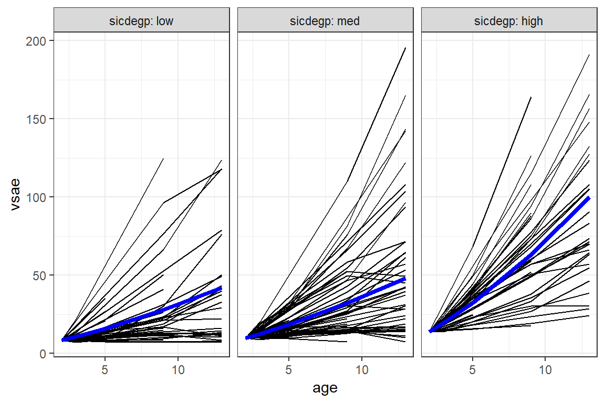
Get fancier
interactions::interact_plot(pop_lmer_2_re, # model name
pred = extrav, # x-axis 'predictor' variable name
modx = texp, # 'moderator' variable name
modx.values = c(5, 15, 25), # values to pick for a continuous "modx"
interval = TRUE, # adds CI bands for pop/marginal mean
y.label = "Estimated Marginal Mean\nPupil Popularity, Mean Rating of Classroom Peers",
x.label = "Pupil's Extroversion, as Rated by Teacher",
legend.main = "Teacher's Experience",
modx.labels = c("5 years",
"15 years",
"25 years"),
colors = c("black", "black", "black")) + # default is "Blues" for modx.values
theme_bw() +
theme(legend.key.width = unit(2, "cm"),
legend.background = element_rect(color = "Black"),
legend.position = c(1, 0),
legend.justification = c(1.1, -0.1)) +
scale_x_continuous(breaks = seq(from = 0, to = 10, by = 2)) +
scale_y_continuous(breaks = seq(from = 0, to = 10, by = 1)) 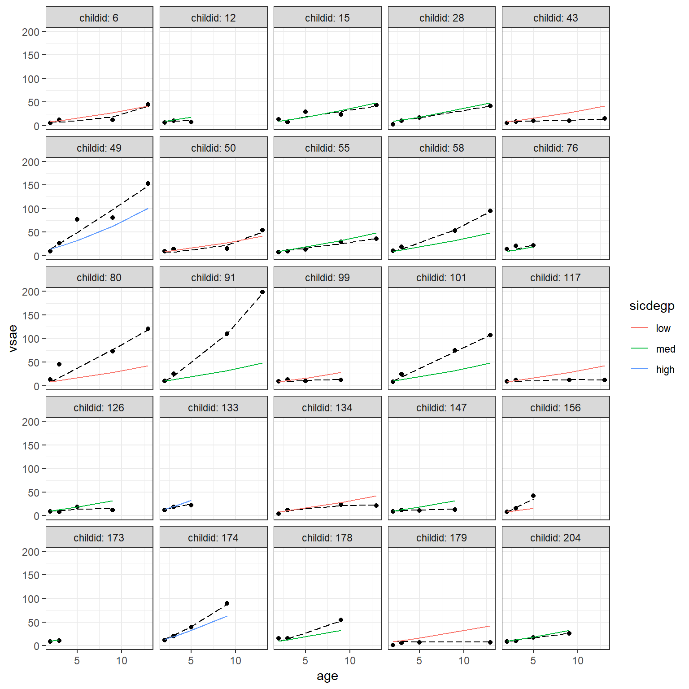
2.4.6.4 Visualization - effects & ggplot2 packages
Get Estimated Marginal Means - default ‘nice’ predictor values:
Focal predictors: All combinations of…
* sex categorical, both levels
* extrav continuous 1-10, default: 1, 3, 6, 8, 10
* texp continuous, default: 2.0, 7.8, 14.0, 19.0, 25.0
Always followed by:
* fit estimated marginal mean
* se standard error for the marginal mean
* lower lower end of the 95% confidence interval around the estimated marginal mean
* upper upper end of the 95% confidence interval around the estimated marginal mean
effects::Effect(focal.predictors = c("sex", "extrav", "texp"),
mod = pop_lmer_2_re) %>%
data.frame() %>%
head(n = 12)effects::Effect(focal.predictors = c("sex", "extrav", "texp"),
mod = pop_lmer_2_re) %>%
data.frame() %>%
head(n = 12) sex extrav texp fit se lower upper
1 boy 1 2.0 -0.003090894 0.2113412 -0.4175635 0.4113817
2 girl 1 2.0 1.237606960 0.2138275 0.8182583 1.6569556
3 boy 3 2.0 1.505152972 0.1580311 1.1952296 1.8150763
4 girl 3 2.0 2.745850827 0.1602411 2.4315933 3.0601083
5 boy 6 2.0 3.767518772 0.1201240 3.5319371 4.0031004
6 girl 6 2.0 5.008216627 0.1208411 4.7712286 5.2452046
7 boy 8 2.0 5.275762639 0.1416414 4.9979820 5.5535433
8 girl 8 2.0 6.516460494 0.1410013 6.2399352 6.7929857
9 boy 10 2.0 6.784006506 0.1892732 6.4128127 7.1552003
10 girl 10 2.0 8.024704360 0.1878555 7.6562909 8.3931179
11 boy 1 7.8 1.165430181 0.1405323 0.8898247 1.4410356
12 girl 1 7.8 2.406128036 0.1432174 2.1252567 2.6869993Pick ‘nicer’ illustrative values for texp
effects::Effect(focal.predictors = c("sex", "extrav", "texp"),
mod = pop_lmer_2_re,
xlevels = list(texp = c(5, 15, 25))) %>%
data.frame() %>%
head(n = 12)effects::Effect(focal.predictors = c("sex", "extrav", "texp"),
mod = pop_lmer_2_re,
xlevels = list(texp = c(5, 15, 25))) %>%
data.frame() %>%
head(n = 12) sex extrav texp fit se lower upper
1 boy 1 5 0.6013166 0.17311622 0.261809 0.9408241
2 girl 1 5 1.8420144 0.17570895 1.497422 2.1866067
3 boy 3 5 1.9611918 0.12950715 1.707208 2.2151752
4 girl 3 5 3.2018897 0.13175620 2.943495 3.4602838
5 boy 6 5 4.0010047 0.09856839 3.807697 4.1943124
6 girl 6 5 5.2417025 0.09913677 5.047280 5.4361250
7 boy 8 5 5.3608799 0.11620822 5.132978 5.5887821
8 girl 8 5 6.6015778 0.11532522 6.375407 6.8277483
9 boy 10 5 6.7207552 0.15520075 6.416383 7.0251277
10 girl 10 5 7.9614530 0.15351226 7.660392 8.2625142
11 boy 1 15 2.6160081 0.09471133 2.430265 2.8017516
12 girl 1 15 3.8567059 0.09677625 3.666913 4.0464990Basic, default plot
<<<<<<< HEADOther than selecting three illustrative values for the teacher extroversion rating, most everything is left to default.
effects::Effect(focal.predictors = c("sex", "extrav", "texp"),
mod = pop_lmer_2_re,
xlevels = list(texp = c(5, 15, 25))) %>%
data.frame() %>%
dplyr::mutate(texp = factor(texp)) %>%
ggplot() +
aes(x = extrav,
y = fit,
fill = texp,
linetype = texp) +
geom_ribbon(aes(ymin = lower,
ymax = upper),
alpha = .3) +
geom_line(aes(color = texp)) +
facet_grid(.~ sex) 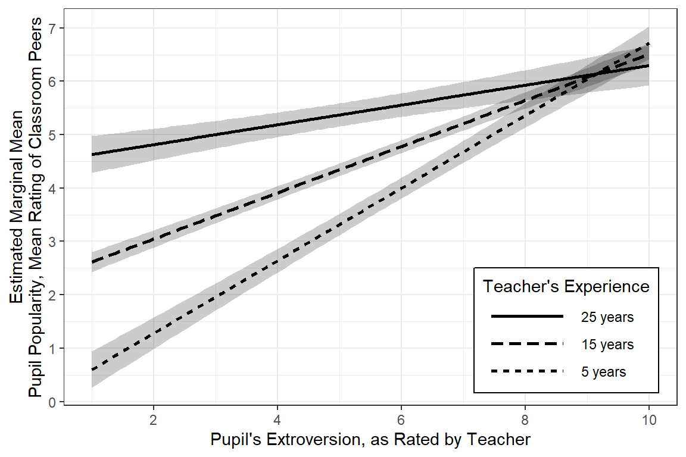
More Clean Plot
There are many ways to clean up a plot, including labeling the axes.
effects::Effect(focal.predictors = c("sex", "extrav", "texp"),
mod = pop_lmer_2_re,
xlevels = list(texp = c(5, 15, 25))) %>%
data.frame() %>%
dplyr::mutate(texp = factor(texp)) %>%
dplyr::mutate(sex = sex %>%
forcats::fct_recode("Amoung Boys" = "boy",
"Among Girls" = "girl")) %>%
ggplot() +
aes(x = extrav,
y = fit,
fill = texp,
linetype = texp) +
geom_ribbon(aes(ymin = lower,
ymax = upper),
alpha = .3) +
geom_line(aes(color = texp)) +
theme_bw() +
facet_grid(.~ sex) +
labs(x = "Pupil's Extroversion, Rated by Teacher",
y = "Estimated Marginal Mean\nPupil Popularity, Mean Rating of Classroom Peers",
color = "Teacher's Experience, Years",
linetype = "Teacher's Experience, Years",
fill = "Teacher's Experience, Years") +
theme(legend.position = "bottom") +
scale_x_continuous(breaks = seq(from = 0, to = 10, by = 2))
Publishable Plot
Since gender only exhibited a main effect and is not involved in any interactions, if would be a better use of space to not muddy the water with seperate panels. The Effect() function will estimate the marginal means using the reference category for categorical variables and the mean for continuous variables.
effects::Effect(focal.predictors = c("extrav", "texp"), # choose not to investigate sex (the reference category will be used)
mod = pop_lmer_2_re,
xlevels = list(texp = c(5, 15, 25))) %>%
data.frame() %>%
dplyr::mutate(texp = factor(texp) %>%
forcats::fct_rev()) %>%
ggplot() +
aes(x = extrav,
y = fit,
linetype = texp) +
geom_ribbon(aes(ymin = lower,
ymax = upper),
fill = "black",
alpha = .3) +
geom_line() +
theme_bw() +
labs(x = "Pupil's Extroversion, Rated by Teacher",
y = "Estimated Marginal Mean\nPupil Popularity, Mean Rating of Classroom Peers",
color = "Teacher's\nExperience,\nYears",
linetype = "Teacher's\nExperience,\nYears",
alpha = "Teacher's\nExperience,\nYears") +
theme(legend.key.width = unit(2, "cm"),
legend.background = element_rect(color = "Black"),
legend.position = c(1, 0),
legend.justification = c(1.1, -0.1)) +
scale_linetype_manual(values = c("solid", "dashed", "dotted")) +
scale_x_continuous(breaks = seq(from = 0, to = 10, by = 2)) +
scale_y_continuous(breaks = seq(from = 0, to = 10, by = 1)) 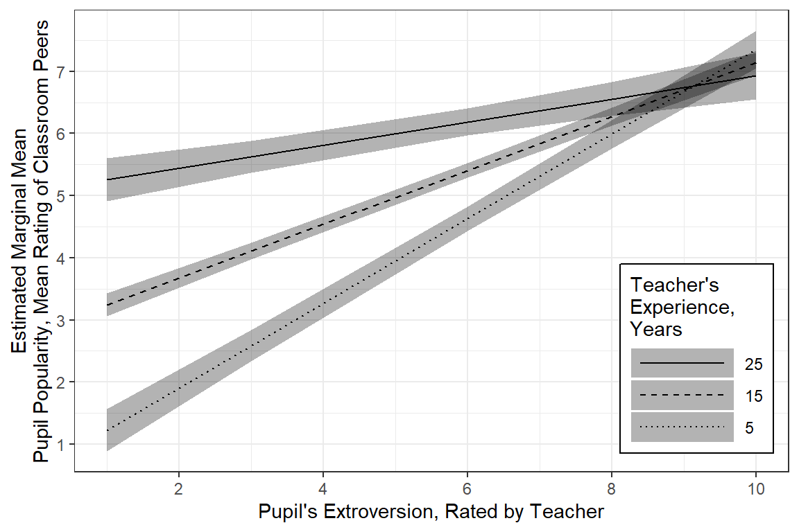
=======Other than selecting three illustrative values for the teacher extraversion rating, most everything is left to default.
effects::Effect(focal.predictors = c("sex", "extrav", "texp"),
mod = pop_lmer_2_re,
xlevels = list(texp = c(5, 15, 25))) %>%
data.frame() %>%
dplyr::mutate(texp = factor(texp)) %>%
ggplot() +
aes(x = extrav,
y = fit,
fill = texp,
linetype = texp) +
geom_ribbon(aes(ymin = lower,
ymax = upper),
alpha = .3) +
geom_line(aes(color = texp)) +
facet_grid(.~ sex) 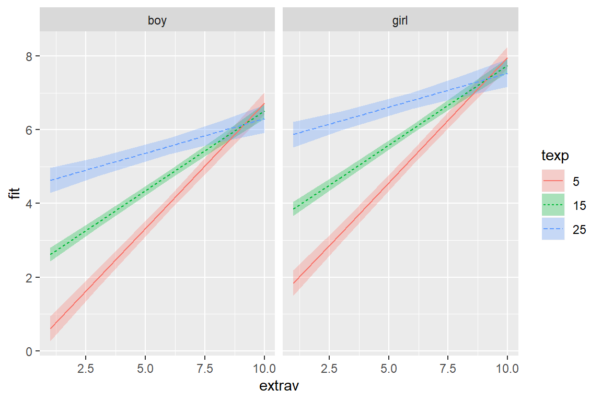
More Clean Plot
There are many ways to clean up a plot, including labeling the axes.
effects::Effect(focal.predictors = c("sex", "extrav", "texp"),
mod = pop_lmer_2_re,
xlevels = list(texp = c(5, 15, 25))) %>%
data.frame() %>%
dplyr::mutate(texp = factor(texp)) %>%
dplyr::mutate(sex = sex %>%
forcats::fct_recode("Amoung Boys" = "boy",
"Among Girls" = "girl")) %>%
ggplot() +
aes(x = extrav,
y = fit,
fill = texp,
linetype = texp) +
geom_ribbon(aes(ymin = lower,
ymax = upper),
alpha = .3) +
geom_line(aes(color = texp)) +
theme_bw() +
facet_grid(.~ sex) +
labs(x = "Pupil's Extroversion, Rated by Teacher",
y = "Estimated Marginal Mean\nPupil Popularity, Mean Rating of Classroom Peers",
color = "Teacher's Experience, Years",
linetype = "Teacher's Experience, Years",
fill = "Teacher's Experience, Years") +
theme(legend.position = "bottom") +
scale_x_continuous(breaks = seq(from = 0, to = 10, by = 2))Publishable Plot
Since gender only exhibited a main effect and is not involved in any interactions, if would be a better use of space to not muddy the water with seperate panels. The Effect() function will estimate the marginal means using the reference category for categorical variables and the mean for continuous variables.
effects::Effect(focal.predictors = c("extrav", "texp"), # choose not to investigate sex (the reference category will be used)
mod = pop_lmer_2_re,
xlevels = list(texp = c(5, 15, 25))) %>%
data.frame() %>%
dplyr::mutate(texp = factor(texp) %>%
forcats::fct_rev()) %>%
ggplot() +
aes(x = extrav,
y = fit,
linetype = texp) +
geom_ribbon(aes(ymin = lower,
ymax = upper),
fill = "black",
alpha = .3) +
geom_line() +
theme_bw() +
labs(x = "Pupil's Extroversion, Rated by Teacher",
y = "Estimated Marginal Mean\nPupil Popularity, Mean Rating of Classroom Peers",
color = "Teacher's\nExperience,\nYears",
linetype = "Teacher's\nExperience,\nYears",
alpha = "Teacher's\nExperience,\nYears") +
theme(legend.key.width = unit(2, "cm"),
legend.background = element_rect(color = "Black"),
legend.position = c(1, 0),
legend.justification = c(1, 0)) +
scale_linetype_manual(values = c("solid", "dashed", "dotted")) +
scale_x_continuous(breaks = seq(from = 0, to = 10, by = 2)) +
scale_y_continuous(breaks = seq(from = 0, to = 10, by = 1)) 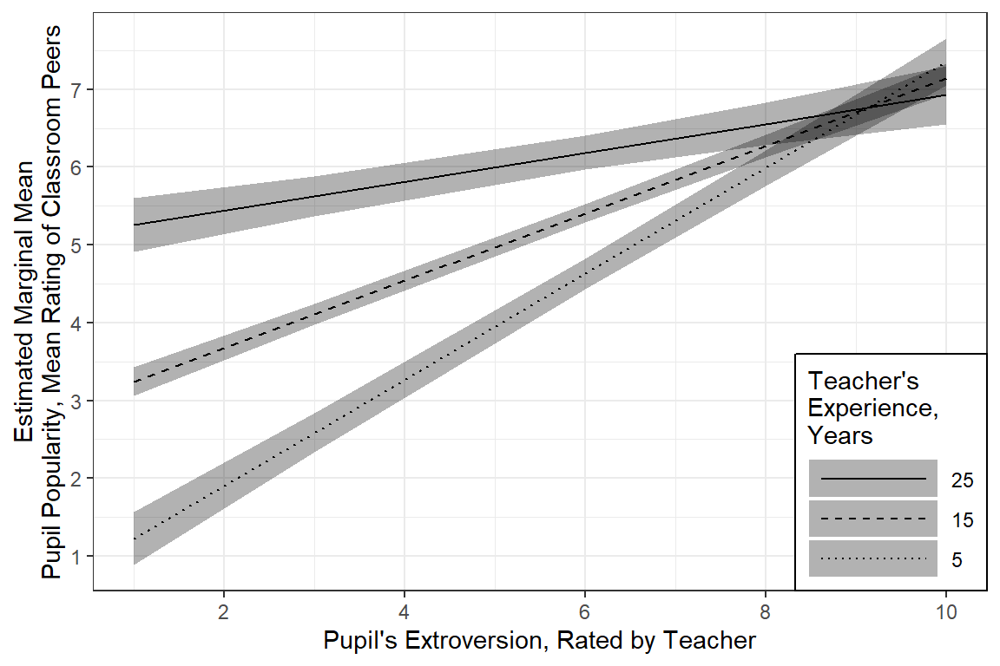
>>>>>>> master2.4.6.5 Interpretation
Form more infromation, see the vingette page for the redre package.
After accounting for class-to-class variation and the effect of gender, a positive association was found between teacher rated extroversion and peer rated popularity. This relationship was more marked for less experienced teachers.
2.4.6.6 Residual Plots
[[1]]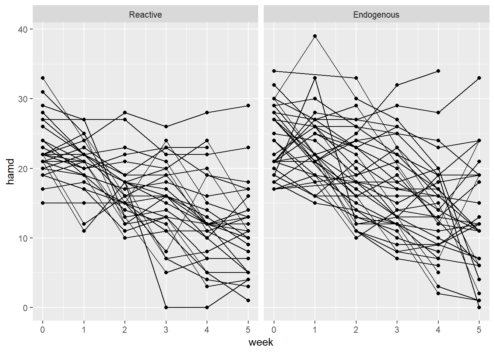
[[2]]
[[2]]$class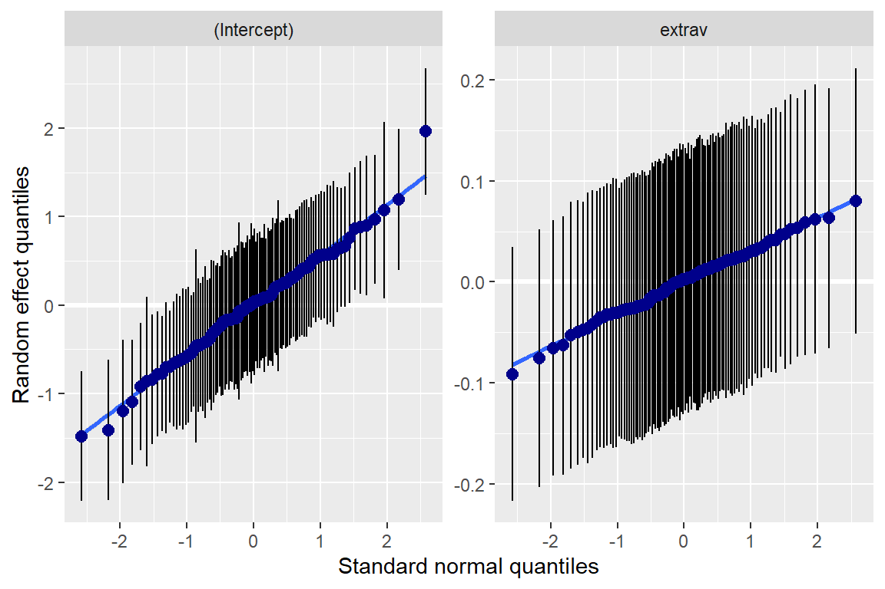
[[3]]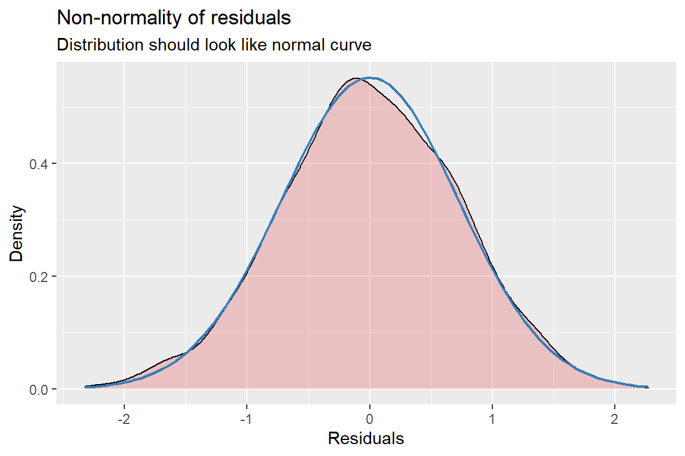
[[4]]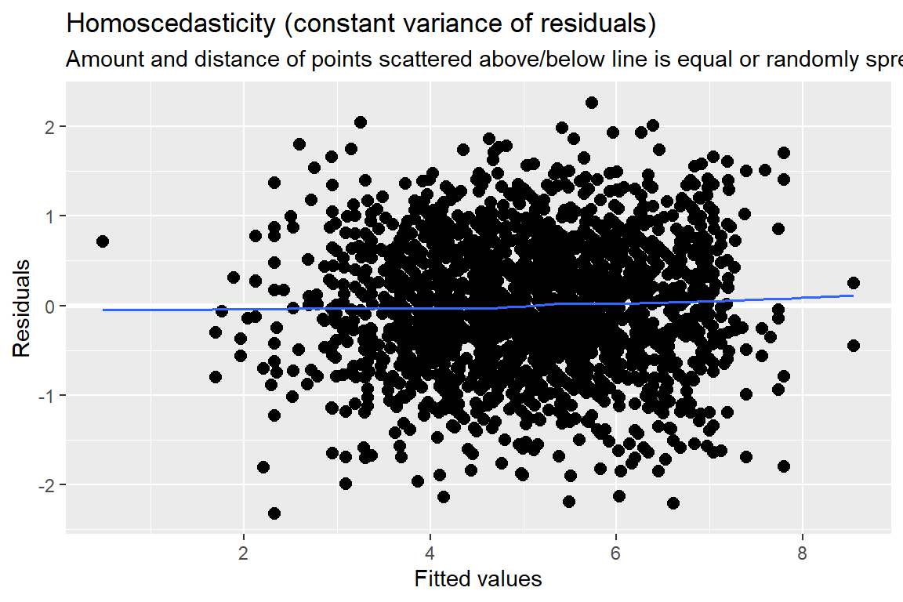
Standardized residuals vs. fitted values
You always want to use studentized, conditional residuals for MLM!
As you look across the plot, left to right:
- GOOD = no pattern & HOV
- BAD = any pattern or change in the spread
This plot looks great!
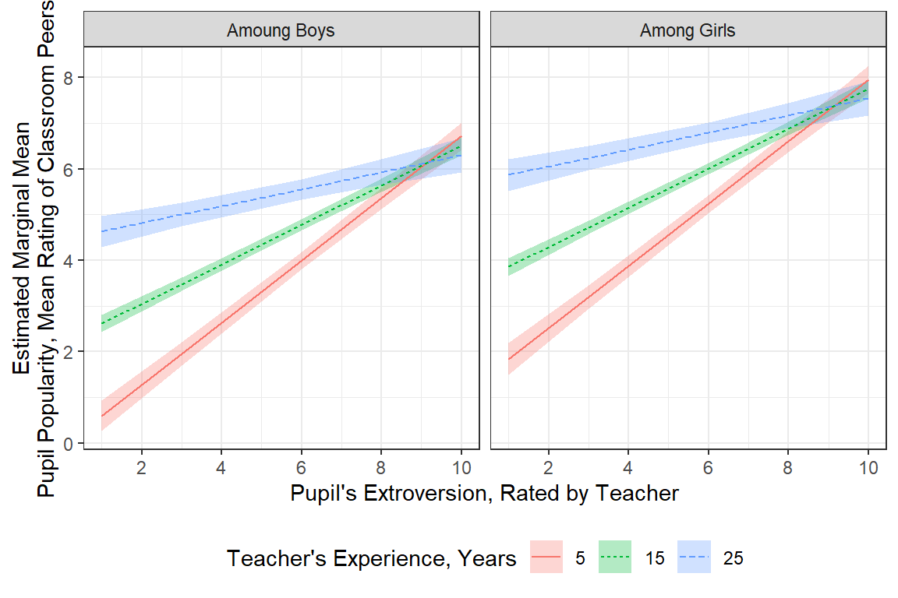 Standardized residuals vs. a predictor’s values
You are looking for the same things as above. Note: the vertical stripes are fine, as they just reflect the fact that the extrav variable was a whole number value, ranging from one to ten.

Normal Quantile plot of Residuals
As you look across the plot, along the diagonal:
- GOOD: roughly a straight line
- BAD: curvature (S-shaped)
This plot looks great! The slight flare at the far ends is not too drastic.
 Our model had both random intercepts and random slopes (RIAS). The panel on the left is more the random intercepts and the right is of random slopes (for the
Our model had both random intercepts and random slopes (RIAS). The panel on the left is more the random intercepts and the right is of random slopes (for the extrav predictor).
You are looking for the same things as above…and these are not too bad!

To explor more plots, you can use the shiny app by running the code below: